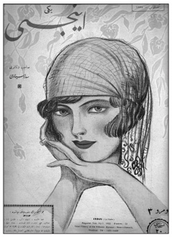

Osmanlı’da “ahali” sözcüğü en azından Müslümanlar için erkeklere münhasır bir sözcüktü. Müslüman kadının II. Meşrutiyet yıllarına kadar kamusal alanda pek az görünmesi nedeniyle sokak erkeğin alanıydı. Bu nedenle “ahali” sözcüğü de zımnen erkek topluluğunu ifade ediyordu. “Ahali”den “halk” sözcüğüne geçişle birlikte durum köklü bir biçimde değişime uğradı. Halk sözcüğü sosyolojik içerik kazanıp erkeğin yanı sıra kadını da kapsar olmuştu. Bu nedenle “halka doğru” gidilirken kadın da görünür olmuş, toplumda konumunu güçlendirmişti. 10 Temmuz ya da bugünkü takvimle 23 Temmuz 1908 “hürriyetin ilanı” olarak bilinegeldi. Eski nesil için l908 “hürriyet”le eşanlamlıydı. l908’de doğanlar, doğum tarihleri sorulduğunda “hürriyette doğdum” diye yanıt veriyorlardı.
Hürriyet sözcüğü II. Meşrutiyet’in simgesiydi. Gerçekleştirilen “siyasî inkılâb”ın temel şiarıydı. Feminist hareketin dünya ölçeğinde güç kazandığı 19l0’lu yıllar Türkiye’de de kadının özgürlükleri doğrultusunda önemli kazanımlar elde ettiği dönemdi.218Kadın da halkın bir parçası olmaya adaydı. 1908 Jön Türk Devrimi’nin benimsediği “hürriyet, müsavat, adalet, uhuvvet” ilkeleri Osmanlı’da kadın sorununu gündeme getirmiş, kadının “toplumsallaşması” ya da kadın erkek eşitliği II. Meşrutiyet’in temel kaygılarından birini oluşturmuştu. Meşrutiyet’in ilk günlerinden itibaren kadınlar Jön Türk Devrimi’ne arka çıkmışlardı. 25 Ağustos 1908 günü Osmanlı Kadınları Cemiyet-i İttihadiyyesi Kadıköy’de Kuşdili çayırındaki tiyatroda Ahmed Fehim Efendi yönetimindeki tiyatro kumpanyası tarafından oynanan Vatan piyesini düzenliyor ve hasılatı “iane-i milliyye”ye bağışlanıyordu.219Başkanlığını Sabiha Hanım’ın yaptığı Heyet-i Nisaiyye ise Manakyan Efendi’nin kumpanyasına oynattığı oyundan elde ettiği yirmi iki lirayı ve dernek üyelerinin girişimiyle toplanan on sekiz lirayı İttihat ve Terakki Cemiyeti’ne bağışlıyordu.220
Yukarıda belirtildiği gibi İttihatçılar için “siyasî inkılab” bir başlangıçtı. “Siyasî inkılab”ı “ictimaî inkılâb”ın izlemesi kaçınılmazdı. “İctimaî inkılâb” her şeyden önce “yeni hayat”ı gerektiriyordu. “Yeni hayat” Selanik’te Gökalp’in de içinde bulunduğu bir çevrede gündeme gelmişti. “Yeni hayat”ın belki de en önemli boyutu kadın yaşamına ilişkindi. Kadın Osmanlı’da süregelen geleneksel yaşam biçimini bırakmalı, toplumsallaşmalı, özgürlüklerini genişletmeliydi. Kısaca toplumsal kimlik kazanmalı, görünür olmalıydı.
Selanik’te Feminizm
Osmanlı’da Batı’dakine benzer bir feminist hareket II. Meşrutiyet yıllarında gün ışığına çıkmıştı. Osmanlı’da “nisaiyyun” ya da feminist hareketin doğduğu kent, diğer fikir hareketlerinde olduğu gibi, Selanik’ti. Selanik Osmanlı’nın aydın kentiydi. Kozmopolit yapısı ve Batı’ya gerek demiryolu, gerekse denizyolu ile bağlantıları onu Balkanlar’ın en modern kenti konumuna sokmuştu. Değişik etnik unsurların birlikteliğinden kaynaklanan bir zenginliği vardı. Jön Türk Devrimi’nin Selanik’te başlaması da bir rastlantı değildi. Kadın özgürlüğü de Selanik’te filizlenmişti. Meşrutiyet’in başlangıç yıllarının ilk “cemiyet-i nisvan”ı ve en güçlü kadın örgütü Teali-i Vatan Osmanlı Hanımlar Cemiyeti Selanik’te kurulmuştu ve kısa sürede İstanbul’da da örgütlenmişti. Uzun yıllardan beri bilinegelen Hanımlara Mahsus Gazete Meşrutiyet’te artık “Teali-i Vatan Osmanlı Hanımlar Cemiyeti’nin naşir-i efkârı”ydı.
Hanımlara Mahsus Gazete “nisvan-ı İslam”a, yani Müslüman kadınlara seslenen bir gazeteydi. Selanik’teki dizinin ilk sayısında Pakize Seni imzalı bir mektupta “matbuat hürriyet-i tammesi”ne, basın özgürlüğüne nail olan Osmanlı’da kadınların bu sayede “efkâr-ı nisvanın terakkiyat ve tekâmülâtına vasıta” olacak bir yayın organına kavuştukları vurgulanıyordu.221Keza aynı mektupta toplumsal cinsiyet sorunu “feminizm, anti-feminizm meselesi” olarak kaydediliyordu. Teali-i Nisvan’dan kısa süre sonra Selanik’te ikinci bir kadın derneği, Osmanlı Kadınları Şefkat Cemiyet-i Hayriyyesi kurulmuştu.222
Selanik payitahta oranla daha “liberal” bir kentti. İnsanlar bu kentte “hürriyet”i daha rahatlıkla soluyorlardı. Kentin Hukuk Mektebi de Dersaadet’tekine oranla özgürlüklere daha fazla yer veriyordu. Göz gezdirildiğinde ders kitaplarının, özellikle hukuk kitaplarının “serbesti” ya da “hürriyet” sözcüklerinin inhisarında olduğu görülüyordu. Osmanlı Devleti’nin ilk anayasa ders kitabının Selanik’te yayımlanması da bir tesadüf olamazdı.223Sermed Efendi’nin Hukuk-ı Esasiye’si, Selanik Mekteb-i Hukuk birinci ve ikinci senelerinde takrir ettiği notlardı. Taşbaskısı bu kitabın önemli bir kısmı özgürlüklere ayrılmıştı: Hürriyet-i umumiyye, hakk-ı müsavat, hürriyet-i şahsiyye, hürriyet-i efkâr, arzuhal itası hakkı, hürriyet-i mezâhib, hürriyet-i tedris, hürriyet-i matbuat, hürriyet-i ictima, hürriyet-i iştirak, hürriyet-i mesai, ticaret ve say, hürriyet-i tasarruf; tüm bu özgürlükler 1908 baskısı bu kitabın bölümlerini oluşturuyordu.224
II. Meşrutiyet’in ilanının ardından kadın dergileri raflarda yerini aldı. İlklerden biri İstanbul’da
yayımlanan “Edebi, İlmi, Siyasi Hanımlara Mahsus Haftalık Musavver Mecmua” Demet’ti.
Feminizm üzerine derinliği olan ilk metinler de yine Selanik’te yayımlandı. İlginçtir, bu bilgiler bir ders kitabının sayfaları arasındaydı. Ders kitabı olmasının ötesinde bu kitap bir iktisat ders kitabıydı. Selanik Mekteb-i Hukuk Müdürü ve İlm-i İktisat ve Hukuk-ı İdare Muallimi Muslihiddin Âdil Bey’in Hukuk Mektebi için yazmış olduğu ve Selanik’te Zaman Matbaası’nda 1912’de yayımlanan İktisad Dersleri adlı eserde, belki de dünya iktisat tarihinde tek bir örnek olarak feminizme geniş yer verme gereği duyulmuştu.225Eserin dipnotları, bu satırların konuya vâkıf bir kişinin kaleminden çıktığını kanıtlıyordu. “La femme et le droit”, “Le droit de la femme”, “La femme devant la science contemporaine”, “La condition sociale des femmes” Muslihiddin Âdil’in feminizm bahsini yazmak için başvurduğu Fransızca kaynaklardı.
Muslihiddin Âdil feminizm konusunu, iktisadın ana konularından biri addedilen “işbölümü”, ya da o günkü adıyla “taksim-i amel” üst başlığı altında ele alıyordu. Kadın erkek arasındaki işbölümü ise feminizmin hareket noktasıydı. Muslihiddin Âdil’in kadın sorunu üzerine satırları belki de Meşrutiyet’te derinliği olan, en kapsamlı yazılardan biriydi. Batı ülkeleriyle Osmanlı kadın hukuku (“hukuk-ı nisvan”) açısından karşılaştırılıyor ve feminizmin genel bir değerlendirmesi yapılıyordu. Muslihiddin Âdil’e göre, kadın ile erkek arasındaki geleneksel işbölümü kuramsal açıdan kulağa hoş gelse de çağın gerçekleriyle artık bağdaşmıyordu. Geleneksel beklenti erkeğin dışarıda çalışması, kazanması, ailenin geçimini temin etmesi, kadının ise evi çekip çevirmesi, kitapta yer alan terimle “hayat-ı beytiyeyi idare” etmesiydi. Bu karşılıklı görevler aileden beklenen saadetin doğuşu için yeterliydi.
Doğal gözüken bu işbölümü artık çağdaş toplumlarda anlamını yitirmişti. İlkel koşullarda yaşayan toplumlarda bile kadınların hane haricinde birçok iş gördükleri biliniyordu. Uygar dünyada ise artık kadın çalışma hayatına aynen erkek gibi iştirak etmek zorundaydı. Bu zorunluydu; maişet derdi bunu gerektiriyordu. Hayatta her kadının sırtını verebileceği bir koca, bir kardeşi yoktu. Dullara, yetimlere, evli olup da kocasının yeterince kazancı olmadığı için ev idare edemeyen kadınlara sık sık rastlanıyordu.
Selanik Mekteb-i Hukuk Müdürü ve İlm-i İktisat ve Hukuk-ı İdare Muallimi
Muslihiddin Âdil Bey Hukuk Mektebi için yazmış olduğu İktisad Dersleri adlı
eserinde feminizme geniş yer verme gereği duymuştu.
Kadın namusuyla yaşamak için çalışmaya, ticarete atılmaya muhtaçtı. Böyle olmazsa onlar için sefalet ve felaket kaçınılmazdı. Osmanlı’da belki henüz bu durum vahamet kazanmamıştı. Avrupa’da ve Amerika’da kadın, erkek gibi her türlü üretim faaliyetini omuzlamaktaydı. Fabrikada, ticarette, sanatta kadın işgücü erkeklerle aynı ortamı paylaşmaktaydı. Hukuk alanında, basında, tıpta, posta, telgraf ve telefon idarelerinde kadınlar önemli bir yer işgal etmekteydi. Feminizm işte kadının böylece toplumsal yaşamın her safhasına nüfuz etmesi sonucu doğmuştu. Bu arada Muslihiddin Âdil feminizm için Osmanlıca bir karşılık aramış ve “istinas”ta karar kılmıştı. Feminizmden kadınların da erkekler gibi “mesâlik-i ilmiye ve sınaiye ve siyasiyyeye dahil olabilmeleri, her ikisinin aynı hukuk ve vezâifi haiz olmaları” anlaşılıyordu.
Muslihiddin Âdil için feminizm özgürlükle eşanlamlıydı. Feminizm tarihi, hürriyetin tarihinin ikiziydi. Kadın Fransız Devrimi ertesi bu yolda mücadeleye girişmişti. Özellikle son yarım yüzyılda bu fikir geniş yankı uyandırmıştı. Feminizm, iki “cins-i beşer”in eşitliğini istemekte ve kadının yalnız özgürlüğünü değil, ahlakının yükseltilmesini (teali-i ahlak) de gündeme almaktaydı. “Feminizm, tarik-i hayatta kadının, erkeğin ta yanı başında yürümesini, bir mevcudiyet-i müstakileye malikiyetini, indelhace erkekten hiçbir muavenet ve himaye görmeksizin temin-i hayat eylemeyi ister”di. Bugünkü Türkçeyle feminizm, kadının bağımsız kimliğiyle yaşam kavgasında erkekle eşit koşulları paylaşmasını, erkeğin yardımı ya da koruması olmaksızın maişetini temin etmesini öngörüyordu.
Muslihiddin Âdil, erkeğin kadına oranla üstün olduğu kanısındaydı. Ama bu üstünlük doğal nedenlere dayanmıyordu; eğitim sonucu oluşmuştu. Bedenen ve fikren eğitimden, “terbiye-i bedeniyye ve fikriyye”den yoksun oluşları kadını bugünkü konumuna mahkûm etmişti. “Nisvana da erkeklerin tabi olduğu usul-i terbiye tatbik edilirse, saha-i fen ve sanatta onların da bizim gibi asar-ı muvaffakiyet göstereceklerinde şüphe edilemez”di. Kadını, erkekten aşağı görmek doğru değildi. “Erkekleri mümtaz, kadınları zelil ve hakir addeden bir cemiyet, istikbalde daima bu adem-i müsavatın kurbanı olan miskinler yetiştirir”di.
Muslihiddin Âdil’e göre feminizm son yıllarda, ileri Batı ülkelerinde kadınlara birçok hak sağlamıştı. Fransa’da ticaret mahkemelerine üye seçme hakkı kadın tüccarlara da verilmişti. Felemenk’te kadınların da sanayi odalarına üye olabilmeleri 1896 kanunuyla onaylanmıştı. İngiltere, Amerika, Almanya, Fransa, Norveç, Felemenk ve diğer bazı ülkelerde kadın meslek ve sanayi müfettişliğine atanabilmekteydi. İngiltere ve Amerika’da ticaret ve sanayi encümenlerine üye olabilmekteydi. Amerika’da kadın belediye, okul, dini müessese, kilise seçimlerine katılıyordu. Ve 1907 senesi Mayısı’nın 24. günü feminizm, en büyük zaferini kazanmış, Finlandiya parlamentosunda ilk defa on kadın milletvekili boy göstermişti.
Ama yine de kat edilecek uzun bir yol vardı. Feministlerin yakındıkları husus özellikle hukuk alanındaki eşitsizlikti.226 “Hukuk-ı nisvan” er geç elde edilecekti. Fransız Medeni Kanunu’nda kadın kendi evlat ve ahfadından başka kimse için vasiyet ve velayet üstlenemiyordu. Evli bir kadın taşınmaz malını dilediğince tasarruf edemiyordu. Kocasının izni olmaksızın ticarete atılamaz, mahkeme huzurunda hukukunu savunamazdı. Fransa’da kanunen kadın kocasına tabiydi. Koca yer değiştirirse ya da seyahat ederse eşi onun peşinden gitmek zorundaydı. Kadın konusunda Belçika, Felemenk, İspanya ve İtalya kanunları da Fransız kanununa benziyordu. Yalnız İspanya’da kadının, kocasını denizaşırı yolculukta izleme zorunluluğu yoktu. Ve bu takdirde mahkemeye başvurarak ayrılma talebinde bulunabiliyordu. İtalyan kadını kocasının izni olmadıkça ticarete atılamazdı. 1881 tarihinden itibaren İsviçre’de de kadın kocasının izniyle ticaret yapabiliyordu. Ancak İsviçre’nin her kantonunda kadınlar hakkında farklı hukuk normları geçerliydi. Cenevre kantonu 1895’ten itibaren kadının malını mülkünü dilediğince tasarruf edebileceğini kabul etmişti. Almanya’da “hukuk-ı nisvan” bir ölçüde sağlanmıştı. Nikâh sırasında kadının tasarruf hukukuna açıklık getirilmişti. Nikâh sözleşmesi hükümlerince bir “serbesti” bahşedilmiş ve bu kayda geçirilmiş ise kadın malını istediği gibi tasarruf edebiliyor, dilediği ticari işlemi gerçekleştirebiliyordu. Ticaretten doğacak geliri tümüyle kendisinindi.
Avusturya’da kadın mal ve mülkünün hukukuna sahipti. İsveç’te 1734 tarihli kanun gereğince evli olmayan kadın vesayet altındaydı; 1889 kanunu bu durumun reşit olma yaşı yirmi bire kadar geçerli olacağını belirtmişti. İsveç’te de evli kadın malını mülkünü istediği gibi tasarruf hakkına sahipti. Danimarka’da evlenmemiş kadın vesayet altında kaldığı gibi evli olanlar da kocalarının velayetindeydi. Norveç’te “hukuk-ı nisvan” büyük ölçüde gerçekleşmişti. Norveçli kadın tasarruf hakkına sahip olduğu gibi son zamanlarda çıkarılan bir kanuna göre eşi hamileyken ya da eşini çocuklarıyla birlikte sefalet içinde bırakarak evi terk eden erkek hakkında para, hapis ve hatta kürek cezaları öngörülmüştü. Norveç yasaları böylece ananın hukukunu güvence altına almıştı. Rusya’da evli ya da olmayan her kadın “hukuk-ı medeniyye ve tasarrufiyye”sine sahipti. İngiltere’de 1830 tarihine kadar kadın her türlü tasarruf hakkından yoksundu. İngiliz kadınlarının mücadelesi sonucu o tarihte ve onu izleyen 1884 tarihli kanun gereğince kadının tasarruf hakkı tümüyle güvence altına alınmıştı. İngiliz kadın emvalini müstakilen tasarruf edebildiği gibi ticaret ya da veraset yoluyla veya 200 İngiliz lirasına kadar vasiyet yoluyla sahip olduğu serveti istediği şekilde değerlendirebilirdi. İngiltere’de kadın alım satımda serbestti. Erkekler gibi ticari alanda “hukuk-ı ticariyye”yi haizdi. Amerika mevzuatı da İngiliz mevzuatını izliyordu.
Savaşla birlikte erkeğin cepheye sevki kadını o güne kadar yapmadığı
işlerde çalışmaya sevk etmişti. Erkek berberliğinden baca temizleyiciliğine
kadar değişik uğraşlar bundan böyle kadınlardan beklenir olmuştu.
Batı’da kadının konumuyla ilgili yukarıda belirtilen “manzara-i umumiyye” çizildikten sonra Muslihiddin Âdil Osmanlı’ya dönüyor ve kadının hukuk önündeki konumunu belirliyordu. Muslihiddin Âdil’e göre, şeriat hükümleri ve kanunlar kadının “hukuk-ı tasarrufiyye”sini kati surette benimsemişti. İslam’da kadının tasarruf hakkı Batı’da olduğu gibi bir dizi tartışma sonucu parlamentonun onayıyla değil, İslam’ın doğuşundan beri vardı. Diğer konularda da Osmanlı kadınının hukuku Avrupa kadınının hukukuna oranla daha ileri düzeydeydi. Ancak, hakların en önde geleni olan “tahsil” ya da eğitime bu topraklarda gereği gibi önem verilmemişti. Kadının “dimağı” fikir düzeyi ihmal edile edile “seviye-i irfanı” layık olduğu düzeyden uzak, genellikle pek ilkel bir seviyede kalmıştı. Cehalet erkekler için ne kadar zararlıysa, kadınlar için de o kadar zararlıydı, hatta belki kadınlar için daha da fazla. Bir toplumun çöküşünün nedenlerinden biri kadının bilgiden yoksun oluşuydu. Yükselmek, ilerlemek, saadete kavuşmak isteyen bir toplum, kadının eğitimine, “terbiye-i nisvan”a, büyük önem vermek zorundaydı. Yaşamda selamet ve saadetin temini için kadınlara ileri düzeyde bir “tahsil” vermek gerekiyordu. Kadınlarını mükemmel bir eş, bir anne görmek isteyen bir millet, kadın eğitimini, “irfan-ı inas”ı yükseltmek zorundaydı. Bilim ve fende, özellikle güzel sanatlarda kimi kez kadın erkeğin göremediği, gösteremediği düzeyi, beceriyi yakalayabiliyordu. Kısaca kadının eğitimini ihmal etmek kadar büyük bir toplumsal noksan olamazdı. Milli saadet, kadının “kemalâtı”nda, bilgi ve ahlak güzelliği bakımından olgunluğunda aranmalıydı.
Bu gözlemlerinden sonra, Muslihiddin Âdil feminizmin haksız bir fikir hareketi olmadığı sonucuna varıyordu. Ancak, yine de gizil kaygılarını gündeme getirmeden duramıyordu. Muslihiddin Âdil’e göre, bu fikri geliştirirken ülkenin nüfus açısından konumunun da göz önünde bulundurulması gerekiyordu. Feminizm geliştikçe kadının aileye sıcak bakmadığı görülmekteydi. Kadın özgürlüğü doğurganlıkla ters orantılıydı. Oysa doğumlarda düşüş siyasi açıdan bir ülke için sakıncalar doğuracaktı. Bu nedenle “hukuk-ı nisvan”ı onaylamakla birlikte, aile kurumuna sahip çıkmak, kadının yaşam koşullarını iyileştirerek aile kurmalarını da sağlamak gerekliydi. Kadının konumu Avrupa’dakine benzer olmamakla beraber, Osmanlı topraklarında da sefil aileler vardı. Yarın, Osmanlı sanayileşip fabrikalar, madenler işlemeye başlayınca “amele sefaletleri” bu ülkede de baş gösterecekti. Binaenaleyh şimdiden, toplum gerekli önlemleri almalı, kadını sefaletten kurtarmalıydı. Bu mukaddes bir görevdi. Kimi çevreler kadının fabrikada çalıştırılmasına karşı çıkıyordu. Erkeğin evin maişetini temin ettiği gerekçesiyle kadının mesken dışında, “aşiyâne-i aile” haricinde çalışması onaylanmıyordu.
Muslihiddin Âdil’e göre, bu anlayış çalışma özgürlüğü ile “hürriyet-i say” ile bağdaştırılamazdı. Kadın emeğiyle erkeğe omuz vermezse bundan hem kendisi, hem de toplum olumsuz etkilenecekti. Öte yandan kadın açısından çalışmak, geçimini sağlamak kaçınılmazdı. Meşru bir emek ve faaliyet ile hayatını kazanmak kadının doğal hakkıydı. Osmanlı topraklarında kadın için, özellikle fakr u zaruret içinde olan kadın için makul ve meşru maişet yolları vardı. Muallimelik, muharrirelik, mürebbiyelik, el işçiliği, terzilik, dantelacılık türü mesleklerde çalışmalarını kim yadırgayabilirdi! Çalışan bir kadın uygarlık adına takdire layıktı.227
“Yeni Aile” ya da “Milli Aile”
II. Meşrutiyet yıllarında “halka doğru” gidenler kadın sorununa da el atmışlardı. Daha doğrusu Meşrutiyet ortamının yarattığı göreli özgürlük ortamı kadını da görünür kılmıştı.228Uzun yıllar kafes ardında kalmış Müslüman kadının özgürlüğü bir anlamda sokaktan geçiyordu. Osmanlı feminizmini omuzlayan, yanında aile efradı olmaksızın sokağa çıkan kadındı. Meşrutiyet’in gündeme getirdiği toplumsal sorunlardan biri “aile” idi. Diğer bir deyişle “aile”, tıpkı “halk”, “cemiyet”, “ferd” gibi Meşrutiyet’in sosyolojisinin geliştirdiği kavramlardan oldu. “Aile” geçmişin “familya”sından farklı bir anlam ifade ediyordu. Aile, sosyolojiyle tarihin ortak meselelerinden ya da her ikisini de kapsayan sosyolojik tarihin ana uğraş alanlarındandı. Tarihsel eksende toplumsal yapı ile ailenin etkileşimi toplumbilimin uğraş alanlarından biriydi. Aile toplumsal alanın bir parçası olarak bu yapıyı etkiliyor; toplumsal yapılar da keza aile yapılarında zamanla değişikliklerin oluşmasına vesile oluyordu. Ancak bu karşılıklı etkileşim sürecinde ailenin toplumsal yapıyı yönlendirmesinden çok, toplumsal değişim süreci ailenin oluşumunda köklü dönüşümlere ortam hazırlıyordu. Fransız Devrimi ve benzeri köklü kırılmaların oluştuğu ortamlarda aile “özel alan” olmaktan çıkıyor; “kamu alanı”nda yer alıyordu. Bir başka deyişle aile bundan böyle devletin uğraş alanlarından biriydi. Siyasal yapı ve toplumsal yapı birlikteliği aileyi de, uzun dönemde de olsa, biçimliyordu.
Cihan Harbi ertesi, savaş yıllarında cephe gerisindeki katkıları nedeniyle kadın
toplumda saygın bir konum elde edecekti. Bu bir anlamda ilk dalga
feminizminin zaferiydi. Savaş ertesi kadın çok daha özgürdü.
Her ne kadar aileyi devletin nüvesi olarak gören kuramlar tarihsel açıdan pek tutarlı görülmese de, günümüz toplumlarının ana eksenlerinden biri olan “burjuva” ailesi ve yaşam biçimi 19. yüzyılda “burjuva toplumu” diye adlandırılabilecek bir sosyo-ekonomik yapılanmanın ürünüydü. 19. yüzyılın sonu ile 20. yüzyılın başlarında birçok sosyolog devleti, uzviyetçi bir görüşle ailelerin toplamı olarak görmüştü. Osmanlı-Türk aydınının esinlendiği solidarist (dayanışmacı) Fransız düşüncesi de aileyi bilhassa vurgulamış; toplumsal yapılanmada ona ayrıcalıklı bir konum vermişti. Bu nedenle aile sosyolojik düşüncede temel değer odaklarından biri olarak tanımlanagelmişti. Özellikle buhran yıllarında siyasal güç odağı aileyi bir başka vurgulamıştı. Nitekim iki dünya savaşı arasında aile-devlet etkileşimi ayrı bir önem kazanmış, özellikle Kıta Avrupası’nın otoriter yönetimleri aileyi gündemden düşürmemişti. Toplumsal çözülmenin üstesinden gelebilmek için aile yapılarının savunulması ya da yeni yapılarda pekiştirilmesi önem kazanmıştı. Bundan böyle özel ya da “mahrem” bir aile yaşamı son bulmuş; aile kamu alanının ayrılmaz bir parçası olmuştu. Devletle aile bundan böyle iç içeydi; bütündü.
Toplumda ve siyasal yapıda kökten dönüşümlerin görüldüğü, “yeni hayat” anlayışının güç kazandığı 1908 sonrası Osmanlı’sında ve onu izleyen Cumhuriyet Türkiyesi’nde de aile ve devlet ilişkisi önem kazanmıştı. Gerek İttihatçılar (1908-1918) gerekse Tek-Parti yöneticileri aileyi sürekli gündemlerine almış ve yeniden yapılanması doğrultusunda önemli adımlar atmışlardı. Her iki dönemde sosyolojinin bu denli önem kazanması bir rastlantı değildi. Uluslaşma sürecinde siyaset büyük ölçüde sosyolojinin güdümündeydi. Sosyoloji ulus-devletin oluşumu için temel ipuçları sağlıyor, bireyi toplumun ayrılmaz bir parçası olarak değerlendiriyordu. Jön Türk ideolojisi bu tür bir yapılanma için gerekli toplumsal önkoşulları sosyoloji aracılığıyla keşfedecekti. Nitekim, Gökalp’in Türkçülüğün Esasları adlı eseri sosyolojinin bulgularından oluşacaktı. İttihatçıların gündeme getirdikleri “yeni hayat” Osmanlı’nın değerler sisteminde ve toplumsal yapısında köklü değişiklikleri gerektiriyordu. Bu değişim kadın ve aileyi de kapsayacaktı.
Öte yandan Tanzimat sonrası 19. yüzyıldan itibaren oluşan Batı’ya dönük yeni bir toplumsal yapı, bu arada Selanik, İstanbul, İzmir gibi liman kentlerinde kentlileşen yaşam biçimi geleneksel aile yapılarını da zorlamaya başlamıştı. Batı’daki “burjuva” yaşam biçimi ve tüketim örüntüleri Osmanlı’yı da artık kuşatıyordu. Bir yandan sanayileşmenin uzantısı tüketim örüntülerinin gündeme getirdiği maddi kültür, öte yandan giderek Osmanlı’yı yörüngesine çeken “özgürlük” ve “eşitlik” ilkeleri kadın ve aileyi Osmanlı’nın ana sorunsallarından birine dönüştürecekti. Özellikle Cihan Harbi yıllarında savaş koşullarının neden olduğu toplumsal çöküntü devleti bilfiil aile ve kadın sorunlarıyla uğraşmaya sevk edecek, devlete kadın ve aile konularında da sosyal sorumluluklar yükleyecekti. Kadın, aile ve devlet bundan böyle iç içeydi. Türkiye’de sosyal devletin kendiliğinden biçimlendiği alan kadın sorunsalıyla yakından ilgiliydi.
İttihatçı dönemin ilk yıllarından itibaren milliyetçilikle uyum içinde, en azından kâğıt üzerinde yeni bir aile yapısı şekilleniyordu. Pederşahi aile yapısı yerine çekirdek aile güç kazanıyordu. Kadın özgürlüğü ve buna uygun bir aile yapısı, İttihatçıların deyişiyle “yeni aile” ya da “milli aile”, “yeni hayat” anlayışının ana eksenlerinden birini oluşturacaktı. II. Meşrutiyet’in gündemine oturacak olan “ictimaiyyat” toplumsal grupların yapılanmalarını inceliyordu. Bunun somut örneği, Durkheim sosyolojisi verileriyle normal ve patolojik yapıları ele alan Yeni Felsefe Mecmuası bahsinde görülmüştü. İttihatçılar etnik yapıların çözdüğü toplumda uzlaştırıcı bir toplum modeli arayışı içindeydiler. Toplumsal yapıyı oluşturan tüm tabakaların katılımıyla, uyum içinde bir yapıyı hedefliyorlardı. Bu nedenle Durkheim’in “tesanüd” ya da “solidarité”si aile için de anlam taşıyordu. Aile, sosyolojik anlamda bir dayanışma grubu olarak “tesanütçüler”ce ön planda yer alıyordu. Dönemin belli başlı düşünürleri yazılarında kadın ve aileye sürekli yer vereceklerdi. Türk aile tarihi, Türkiye’ye sosyolojiyi getiren Ziya Gökalp’in yazılarında geniş yer aldı. Gökalp Yeni Mecmua ve Milli Tetebbular Mecmuası’nda çıkan yazılarında Türk ailesinin gelişimini defaatle yorumladı.229Aynı konuları irdeleyen bir diğer bir yazar Halim Sabit’ti.230
Dernekleşme ve Kadın
Osmanlı kadınları Batı’daki feminist akıma benzer bir hareketi II. Meşrutiyet’in özgürlük ortamında başlatacaklardı. Meşrutiyet yıllarında birçok kadın örgütü kuruldu.231Bunların bir kısmı hayır derneği niteliğindeydi.232Hilal-i Ahmer için çalışıyor, fakirlere el uzatıyor, cephe gerisinde yaralılara bakıyor, askere yiyecek, giyecek temin ediyorlardı. Hilal-i Ahmer Cemiyeti Kadınlar Heyet-i Merkeziyesi,233Muhtaç Asker Ailelerine Muavenet Cemiyeti, Müdafaa-i Milliyye Osmanlı Hanımlar 234bu tür dernekler arasında yer alıyordu. Hilal-i Ahmer Kadınlar Şubesi, gerek Balkan Savaşları’nda, gerekse Cihan Harbi’nde cephe gerisinde büyük yararlılıklar gösterecekti. Muhtaç Asker Ailelerine Muavenet Cemiyeti seferberlik nedeniyle geride yoksul kalan ailelere yardım elini uzatacaktı.
Hayır derneği niteliğindeki kadın derneklerinin yanı sıra feminist hedefleri olan ilk dernekler yine bu yıllarda kurulmuştu. Kadınları eğitmeyi, yaşam biçimlerini, giyim kuşamlarını modernleştirmeyi, onlara iş imkânları yaratmayı, sanat vb. şeyler öğretmeyi amaçlayan bu dernekler büyük ölçüde İttihat ve Terakki’nin himayesi altında faaliyete geçmişlerdi. İttihat ve Terakki Kadınlar Şubesi, Kadınları Esirgeme Derneği, Teali-i Nisvan Cemiyeti,235Osmanlı Kadınları Terakkiperver Cemiyeti, Osmanlı Cemiyet-i Hayriye-i Nisaiyye, Müdafaa-i Hukuk-ı Nisvan Cemiyeti Osmanlı feministlerinin kadın hukukunu savunmaya yönelik girişimlerdi. Teali-i Nisvan ünlü kadın yazar Halide Salih [Edip] tarafından 1908’de kurulmuştu. Bu dernek kadınların seçme-seçilme haklarını savunan İngiltere’deki kadın hareketiyle yakın temastaydı.236Üyelerinin eğitimine ayrı bir önem veriyordu.237
Balkan Harbi esnasında Osmanlı Hilal-Ahmer’inde yaralılara bakmak üzere
gelmiş şimalli Türk hanımlarından (sağdan başlayarak) Meryem Pataş,
Rukiye Yunus (oturan), Ümmügülsüm Kemal, Meryem Yakubhanlar.
Müdafaa-i Hukuk-ı Nisvan Cemiyeti kadın dernekleri arasında en radikal olanıydı. Dernek, kadınların fabrikalarda ve kamu sektöründe uygun işlere yerleşerek ekonomik bağımsızlıklarını elde etmelerini hedefliyordu.238Ama, kadınları görünür kılan büyük ölçüde Cihan Harbi oldu. Seferberlik nedeniyle erkeklerin askere alınmaları ve cepheye sevk edilmeleri kadınlara ev işleri dışında istihdam olanakları sağlayacaktı. Ticaretten fabrikalara, yol yapımından sokak temizliğine kadar birçok iş sahasında kadın çalıştırılmaya başlanacaktı. Beyoğlu’nda, Sirkeci’de, Divanyolu’nda işgücü açığı nedeniyle erkekler kadın berberlere tıraş olmaya başlamışlardı. Sabah gazetesi yarı şaka “Erkeklerimiz şimdiden sakallarını kadınların ellerine vermeye başladılar” diye haber geçiyordu.239
Savaş yıllarında kadının durumu daha da vahim bir hal alacaktı. Erkek seferber olmuş, hane geçim derdine düşmüştü. Kırsal kesimde kadın görece geçimini sağlıyordu. Ama kentlerde durum farklıydı. Bağı, bahçesi olmayan günlük rızkını çıkaracak durumda değildi. Buna kısmi çözüm olarak Harbiye Nazırı ve Başkumandan Vekili Enver Paşa’nın girişimiyle Osmanlı Kadınları Çalıştırma Cemiyet-i İslamiyyesi kurulmuştu.240Enver Paşa’nın eşi Naciye Sultan’ın himayeleri altında gün ışığına çıkan dernekte Harbiye Nezareti Müsteşarı İsmail Hakkı, Harbiye Nezareti Mektupçusu Ali Rıza, İstanbul Mebusu Salâh Cimcoz, Dava Vekili Mehmed Arif ve Dava Vekili Mehmet Salahaddin beyler diğer kurucu üyelerdi.
Osmanlı Kadınları Çalıştırma Cemiyet-i İslamiyyesi, kadınlara istihdam alanı açmayı amaç ediniyordu. Cemiyet’in maksadını belirleyen nizamnamenin ikinci maddesinde “İşbu cemiyetin maksadı kadınlara iş bulup kendilerini namuskârane temin-i maişete alıştırarak himaye etmektir” deniyordu. “Cemiyet işbu maksadını temin etmek için kadınların yapabileceği bilcümle işlere kendilerini sevk edecek ve bu suretle çalışacakları daimi surette himaye edecekti.”241Cemiyet, payitahtı İstanbul, Üsküdar ve Beyoğlu olmak üzere üç mıntıkaya ayırmıştı. Her mıntıkada bir veya birkaç fabrika, o günün deyişiyle “Dârüssanâ’a” açmaya karar vermişti. Bu fabrikalar onar bin kişiyi istihdam edecekti. Dârüssanâ’alarda dantel dairesi, beyaz iş dairesi, elbise dairesi, makine ile çorap ve fanila örücülüğü dairesi, asker çamaşırları dairesi ile kostüm, tayyör ve emsali ince işler dairesi adlarıyla değişik atölyeler yer alacaktı.
Cihan Harbi yıllarında kadın vatan savunması gereği madencilik
sektörü dahil en ağır işlerde istihdam olundu. Bu topyekûn
seferberlik gereğiydi. Artık cephe ile cephe gerisi ayrımı kalkmıştı.
Nitekim Dârüssanâ’alarda çalışmak için kadınlardan büyük bir talep geldi. İlk on dokuz gün içinde on bir bin kadın başvurdu. Savaş yıllarında sokak temizliği bile kadınlardan sorulur oldu. Bayezid, Fatih ve Beyoğlu mıntıkalarının temizliği için Cemiyet üç yüz kuruş maaşla üç yüz “kadın nezafet-i fenniyye amelesi” istihdam etmek zorunda kaldı.242Ancak, her kadını bu tür işlerde çalıştırmak kolay olmuyordu. Bir süre sonra İstanbul dışından da kadın işgücü talep edilir oldu. Bir keresinde istek üzerine İzmir’den İstanbul’a 80 kadın işçi gönderildi.243Cihan Harbi ile birlikte resmi dairelerde de kadın memur çalıştırılmaya başlanmıştı.244Bu arada İstanbul’da, Galata rıhtımı arkasında, Mudanya gibi çevre ilçelerden mal getirip satan ve kadın ticaret erbabından oluşan bir Kadın Tüccarlar Pazarı açılmıştı.245Cihan Harbi ülke ekonomisini köklü bir biçimde sarsmıştı. Ticari faaliyetler büyük ölçüde aksamış, piyasaya durgunluk hâkim olmuştu. Bu alanda yine kadınlardan medet umuldu. Ticarete atılacak kadınlara gerekli temel bilgiyi vermek üzere Ticaret Mekteb-i Âlisi tarafından İnas Darülfünunu bünyesinde bir şube açıldı. Şubeye kısa bir sürede yüzün üzerinde başvuru oldu. Gösterilen rağbet üzerine ikinci bir şube açma gereği doğdu.246
“İzdivaç Meselesi” ve Zorunlu Evlilik
Osmanlı’nın Batı ülkeleriyle karşılaştırıldığında en büyük sorunu nüfustu. Avrupa 18. yüzyılın ortalarından itibaren bir tür demografik dönüşüm yaşamış, nüfusu 100-120 milyondan Cihan Harbi arifesi 450 milyona ulaşmıştı. Bu artış Avrupa’nın denizaşırı ülkelere göç vermesine rağmen gerçekleşmişti. Oysa Osmanlı’nın nüfusu durağandı; nüfus artış göstermiyordu. 18. yüzyılın başında Avrupa nüfusunun dörtte birine sahip olan Osmanlı İmparatorluğu’nda, 20. yüzyıla girerken bu oran onda birin altına düşmüştü. Bu oran toprak kayıpları göz önünde bulundurulduğunda da geçerliydi. Osmanlı topraklarında nüfus yoğunluğu son derece düşüktü. Avrupa’da yaşam umudu 20. yüzyılla birlikte hızla 50 yaşın üzerine çıkarken Osmanlı’da bu süre 30 yaşın altında kalıyordu. Savaşlar, salgın hastalıklar, açlık vb nedenler Osmanlı nüfusunu sürekli kırıyordu.
II. Meşrutiyet yıllarında nüfus sorunu yönetimin el attığı konulardan biri oldu.247Özellikle savaşlar Osmanlı’nın beşeri varlığını sürekli kurutmuştu. Nüfusu durağanlıktan kurtarmanın birçok çaresi vardı. Daha iyi sağlık hizmeti verilebilir, eğitimle çocuk ölümleri azaltılabilir, anneler her türlü musibete karşı uyarılabilirdi. Ancak, sürekli savaşların bir diğerini izlediği ortamda temel sorun evlilikti. Savaş ortamlarında evlilik oranları hızla düşüyordu. Bu durum İttihatçı hükümetleri “izdivaç meselesi”ni ele almaya, özendirici nüfus politikaları izlemeye sevk edecekti. Evliliği kolaylaştırıcı girişimler daha II. Meşrutiyet’in ilk yıllarında gündeme gelmişti. Dahiliye Nezareti çeyiz (cihaz), başlık gibi adlar altında alınmakta olan mal ve paranın ödenemeyecek boyutlara ulaştığını, bu nedenle şeriata ve ahlak normlarına aykırı olarak kız kaçırma olaylarının görüldüğünü ve bunun müessif sonuçlar doğurduğunu kaydediyordu. Nezaret, vilayetlere gönderdiği tamimle, nüfus artışını kolaylaştırmak ve ailenin refahı ile saadetini temin edecek servetin israfını önlemek üzere bazı ülkelerde görüldüğü gibi evlenmeyi kolaylaştırıcı derneklerin, o günkü adıyla “teshil-i izdivaç cemiyetleri”nin kurulmasının özendirilmesi gerektiğini vurguluyordu.248
Kadınları Çalıştırma Cemiyet-i İslamiyyesi Cihan Harbi yıllarında devletin özendirici nüfus politikasının yürütülmesini bilfiil üstlenecekti. Cemiyet’in idare heyeti savaşın nüfus sorununu ne denli ciddileştirdiğine dikkati çekiyor, “memleket için hayırlı izdivaçlar akdine teshil ve teşvik etmek” için önlemler alıyordu.249Bu doğrultuda aile hayatının çöküşünü önlemek amacıyla (aile hayat-ı ictimaiyyesinin inhilâlden vikayesi maksadiyle) bünyesinde çalışan memur ve işçiler için zorunlu evlilik ilkesi getiriyordu. Kadınları Çalıştırma Cemiyeti’nin aldığı karar gereğince erkeklerin en geç 25, kadınların ise 20 yaşında evlenmeleri şart koşulmuştu.250Cemiyet gelin adaylarının çeyizlerinin hazırlanmasına yardımcı oluyor, işçi kadınlara hariçten bir erkek talip olduğu takdirde zabıta aracılığıyla ya da başka yöntemlerle damat adayının huyunu suyunu araştırtıyordu. Damat adayı uygun görüldüğü takdirde Cemiyetçe evliliğe müsaade ediliyordu. Müstakbel damat ailesinin maişetini temin edecek bir işte çalışmıyorsa, Cemiyet damadı uygun bir işe yerleştirmeyi vaat ediyordu.251Dernek aracılığıyla istihdam evliliği zorunlu kılmıştı. Evlenme yaşını geçiren ve Cemiyet’in bulduğu adayları beğenmeyenlerin istihkakının yüzde 15’i alıkonuluyor ve dernekle ilişkileri kesiliyordu. Buna karşın evlenen memur ve işçilerin gündelikleri yüzde 20 artırılıyordu. Bunun da ötesinde doğacak her çocuk için ücretler yüzde 20’şer zam görüyordu.
“Halka doğru” anlayışının uzantısı Osmanlı feminizmi doruk noktasına
Mütareke yıllarında ulaştı. Bunda Sabiha Zekeriya’nın rolü büyüktü.
Bu tarihlerde “Türk Feminizmi”nin öncülüğünü Büyük Mecmua yapacaktı.
Kadınları Çalıştırma Cemiyeti damat ve gelin adaylarını tanıştırmak için gündelik gazetelerin baş sayfalarında adayların özgeçmişlerini içeren ilanlar veriyordu.252Bu arada gençleri evlenmeye özendirmek amacıyla gösterişli evlenme törenleri düzenlendi. Yeni evlilere ödüller dağıtıldı. “İzdivaç talepleri” ilanları Mart 1918’den itibaren gazetelerde yer almaya başladı. Vakit gazetesi ilanları “memleketimizin hayat-ı ictimaiyyesinde mühim bir tebeddülün başlangıcı” olarak görüyordu: “Kendileri için bir refik-i hayat arayan erkek ve kadınların önüne yeni bir saadet rehberi” çıkmıştı.253Yeni Mecmua’da evlenmelerde Kadınları Çalıştırma Cemiyeti’nin arabuluculuğuna değinen Kâzım Şinasi, “birçok suiistimallerin, hatta felaketlerin önüne geçmek için ciddiyetiyle tanınmış böyle bir cemiyetin murakıp vazifesini görmesi lazımdır” diyordu.254
Cemiyet’in ihdas ettiği görücülük usulüyle gerçekleşen ilk evlenme akti 8 Mart 1918 günü Üsküdar Mahkeme-i Şeriyyesi huzurunda icra edilecekti. Damat, Osmanlı Seyr-i Sefain İdaresi kaptanlarından İstanbullu Mehmet Hakkı Efendi’diydi. 29 yaşındaydı ve idadî tahsili görmüştü. Gelin ise Birinci Ordu-i Hümayun Kadın Birinci İşçi Taburu’ndan 21 yaşındaki tabur kâtibesi İhsan Hanım’dı. Cemiyet evlilik ikramiyesi olarak çifte 50 lira tutarında “düğün hediyesi” vermişti.255İkinci evlilikte damat Zeytinburnu Sanayi Mektebi’nden mezun ve Zeytinburnu Fabrikası dökümcü ustalarından Mustafa Efendi’ydi. Gelin ise Çapa Dârüssanâ’ası Fanila Şubesi’nde çalışan Halepli Fatma Hanım’dı. Damat 28, gelin l8 yaşındaydı. Cemiyet kendilerine düğün hediyesi olarak 25 lira vermeyi kararlaştırmıştı. Vakit gazetesi yeni çiftleri kutluyor, “fabrika hayatı”nın ülkede aile hayatını yıkacak yerde aksine sağlam bir esas üzerine oturtacağını ve böylece mesut ailelerin kurulmasını sağlayacağını yazıyordu. II. Meşrutiyet yıllarında aile sorunu, “yeni hayat” diye nitelenen yeni yaşam biçiminin bir parçası olmuştu. Toplumda kökten dönüşümler aile yaşamını da kapsamak durumundaydı. “Yeni aile” ya da “milli aile” İttihatçıların özlemini duydukları aile biçimiydi. “Milli aile” çekirdek aileydi. Ana baba ve çocuklardan oluşuyordu. Aile ahlakı toplumun temel dayanak noktalarından biri olarak görülüyordu. “Milli aile” ise II. Meşrutiyet yıllarında gündeme gelen “aile buhranı”na bir çözümdü.
II. Meşrutiyet yıllarında kadının yaşamında kalıcı dönüşümler izlendi. Kadının toplumsallaşması, görünür olması, toplumsal yaşamla bütünleşmesi bunlardan ilkiydi. Toplumsallaşma kadın-erkek eşitliğinin ilk adımıydı. Meşrutiyet feminizmi düşünsel ortamı bu açıdan olumlu yönde etkiledi. Ancak, toplumsallaşma sürecinde Meşrutiyet’in yarattığı maddi ortamın belirleyiciliği çok daha ön planda yer alıyordu. Savaşlar nedeniyle erkek nüfusun cepheye sevk edilişi istihdam alanında bir boşluk yaratmış, bu nedenle kadın nüfus kısa sürede seferber edilerek çalışma yaşamına sokulmuştu.256Kadının toplumsallaşması, görünürlüğü, aile kurumunu da bir ölçüde etkileyecekti. Özellikle, İstanbul, İzmir gibi büyük kentlerde kadın erkek ilişkilerinde geleneksel yapı çözülmeye yüz tutuyordu. Aile sorunu nüfus politikası bağlamında ele alınıyor, evlilikler özendirilerek sürekli savaşların neden olduğu insan kaybı giderilmeye çalışılıyordu. Bu nedenle o döneme değin “özel” alan kapsamına giren aile kurumu kamusallaşmış; nüfus sorununa “milli aile” ile çözüm aranmıştı.
Kadın İşçi Taburu
Kadınların iş yaşamına katılımında Harbiye Nezareti öncü işlevi görmüştü. Dârüssanâ’alar bunun somut örnekleriydi. Harbiye Nezareti kendi bünyesinde lojistik işlerde istihdam etmek, aynı zamanda bilfiil üretimde bulunmalarını sağlamak amacıyla kadınları gönüllü olarak askere de almıştı. İstanbul’da Birinci Ordu tarafından oluşturulan Birinci Kadın İşçi Taburu (Birinci Ordu-i Hümayun’a Merbut Birinci Kadın İşçi Taburu) geri hizmette kadınlara istihdam alanı açmıştı. Vakit gazetesi, “Kadınlarımız nihayet şimdi askerlik hayatına dahil olmak üzere bulunuyorlar” diyor, Wiener Journal’dan alıntı yaparak “Türk kadınını bu vaziyette görmeyi herhalde kimse beklemezdi. Genç Türk hareketinin Türk kadınlarının hayatında büyük bir inkılâb hasıl ettiğine bundan büyük bir delil olamaz” satırlarına yer veriyordu.257Taburun oluşturulmasında esas amaç kadınları bizzat “temin-i maişet”e alıştırmaktı. 1918’in Şubat ayında gazetelerde yer alan çağrıya göre orduda işçi kadın olarak istihdam edileceklerin 18-30 yaş arası Osmanlı uyruğu ve “güçlü kuvvetli” olması gerekiyordu. Ehl-i namus ve iffetten olduğu mahalli mercilerce belgelenmeli ve “kucakta taşınır çocuğu” bulunmamalıydı.258İstihdam olunan kadınlar iki sınıfa ayrılıyordu. Bir bölümü maaşlı memurdu. Diğer kısmı nefer tahsisatlı, ücret ya da yevmiye alan işçilerdi.
Taburun ilk aşamada komutası ve inzibat heyeti ordudaki zabitlerden ve askerlerden oluşuyordu. İleride edinilen deneyimler sonucu taburun yönetimi de kadınlara bırakılacaktı. Taburun idare heyeti tabur kumandanı, bölüm kumandanı, hesap memuru, tabur başkâtibesi ve kadın bölükbaşından oluşuyordu. Taburda ayrıca bir ziraat memuru ve bir de yol mühendisi bulunacaktı. Tabur bünyesinde bir revir kurulacak ve burada hastabakıcılar görev yapacaklardı. İşçi taburunda çalışanlar için sekiz saatlik işgünü benimseniyordu. İşçilerin iffet ve namusu özellikle gözetiliyordu. Tabur zabitleri, memur ve memureleri, tabur kadınlarını hiçbir suretle yanlarına ve “hanelerine” alamayacaklardı. Kâtibe ve memurelere de erkek hademe veya nefer verilmeyecekti.
Kadın taburuna kabul olunan kadınları İstanbul’da Kadınları Çalıştırma Cemiyet-i İslamiyyesi, taşrada mahalli idare meclisleri seçiyor ve gönderiyorlardı. Memure kadınların görevleri erkeklerinki gibiydi. Kâtibe ve memureler de zabitan gibi nöbet tutacaklardı. Taburda komutları bildirmek için bölük ve takımbaşı olanlara ve onbaşı, çavuş, başçavuş kadınlara birer düdük verilmişti. Tabur kadınları askeri talimlerden muaftılar. Ancak, adab-ı muaşeret, amirlerin huzurunda “idare-i kelâm ve tavır ve hareket” hususlarında düzenlenecek bir program dairesinde kışlalarda eğitim göreceklerdi. Kadınların göreve tayin ya da azil veya gerek kalmamasından dolayı ihracı ve tardı ve nihayet taltifi ordu komutanlarına aitti.
Tabur kadınlarının yeldirme ve başörtüsüyle çektirecekleri fotoğraflar kendilerine verilecek “cüzdan”lara ya da kimlik kartlarına konacaktı. Tabur kumandanlığınca tasdik edildikten sonra mektupları asker mektupları gibi posta ücretinden muaf tutuluyordu. Maaşlı memurelerin seçimi, tayini, terfi ve azli ordu kumandanlığınca yapılıyordu. Hizmeti takdire şayan bulunan işçi kadınlara taburca takdirname veriliyordu. Beher takdirname on kuruş karşılığı kabul edilerek her ay sonunda ikramiyeye dönüştürülüyordu. Evli tabur kadınlarına sabah işbaşı yapma koşuluyla haftada dört gece izin veriliyordu. İşbaşı yapamayacak derecede uzak yerde oturanlar için bu izin haftada yalnız bir gündü. Evlenenlere alışılagelmiş olanın dışında 20 günlük bir izin öngörülmüştü. Tabur kâtibesinin maaşı 600, bölük kâtibesinin 500, tabur iaşe memuresinin 600, bölükbaşının 600, takımbaşının 400, hastabakıcının 300, terzinin 500, işçilerin 250 kuruştu. Kıdem ve hizmete göre bu miktar artırılabiliyordu.259
Cihan Harbi esnasında Osmanlı Hilal-i Ahmer’i tarafından tesis olunan İstanbul Cağaloğlu
Hastanesi’nde hekimler ile Türk hastabakıcı hanımları: (Oturanlar sağdan sola) Tabib Muavini
İsmail Hakkı Efendi, Doktor Şerefüddin Efendi, Sertabib Ali Derviş Bey, Doktor Robert Efendi,
Tabib Muavini İsmail Efendi.
Kadın işçi taburunun kıyafeti pelerin, manto, ceket, şalvar ile başörtü, tozluk, yeldirme ve fotinden ibaretti. Bütün kadınlar “Kadın Birinci İşçi Taburu” amblemi ve kayıt numarasını taşıyan pazıbendini sol kollarının üst kısmında yeldirmelerine raptedeceklerdi. Memure ve kâtibelerin yakalarına sırma şeritle çevrilmiş kırmızı bir çuha parçası dikilmişti. Bölükbaşı ve takımbaşı sırma şerit ve sarı yıldız, diğer kâtibe ve memure beyaz yıldız takıyordu. Hastabakıcılar ve terzilerin yakalarında çuha etrafındaki sırma şerit yoktu. Terziler yıldız yerine beyaz madeni makas, hastabakıcılar ise beyaz madeni hilal taşıyorlardı. Bölükbaşının yakasına iki yıldız, takımbaşı kıdemlisi ya da yaşlısınınkine bir yıldız konmuştu. Diğer kâtibeler ve kıdemsiz takımbaşılar ile iaşe memurelerinde yıldız işareti yoktu. İşçi kadınlar içinde onbaşı, çavuş ve başçavuş rütbesini haiz olanlar yakalarına kırmızı çuhasız ve sırma şeritsiz sarı yıldız takıyorlardı. Onbaşıların bir, çavuşların iki, başçavuşların üç yıldızı vardı. Nefer düzeyindeki işçi kadınların yakalarında işaret yoktu.260
Kadın amele taburları salt kentlerde faaliyet göstermiyordu. Kırsal kesimde de üretime katkıda bulunuyorlardı. Nitekim Suriye’de Cemal Paşa’nın öncülüğünde, Dördüncü Ordu’nun bünyesinde Kadın Amele Taburları kurulmuştu. Pamuk savaşta en stratejik ürünlerden biriydi. Dördüncü Ordu’nun kadın amele taburları büyük ölçüde pamuk hasadı için Çukurova yöresine sevk edilmişlerdi.261
“Milli Aile” Modeli
Cihan Harbi Osmanlı kadını ve ailesini yeni arayışlara sevk etmişti. Savaş ve cephede verilen kayıplar gün geçtikçe beşeri sermayeyi olumsuz etkiliyordu. Cephe gerisinde erkek nüfusun azalması kadınların o güne kadar erkeklerin alanı olan iş sahalarına girmelerine neden olmuştu. Osmanlı kadınının, evin geçiminden sorumlu erkeğini cepheye gönderince iş aramaktan başka çaresi kalmamıştı. Bu koşullarda kadın ve aile kamusal alanın bir parçası olmuştu. Bu yıllarda İttihatçıların gündeme getirdikleri “milli aile” Batı’nın çekirdek ailesinden esinlenmişse de tıpatıp bir aktarım söz konusu olamazdı. İslam normlarının egemen olduğu özel alan konusunda ayrı bir duyarlılık gerekiyordu. Nitekim bu noktada İttihatçılar yerel olan kültür ile “beynelmilel” olan medeniyeti ayıracaklardı. Aile yapısı, kültürün bir parçasıydı ve yerel kalmak zorundaydı. Bu nedenle “milli aile” Batı’nın aile modelleriyle benzeşmek zorunda değildi.
Gökalp’e göre Osmanlı ailesi bir kurum olarak Tanzimat döneminin başlangıcından beri ciddi bunalımla karşı karşıyaydı. Avrupa’yı körü körüne taklit eden Batıcı bazı düşünürler ulusal nitelikteki kültürü görmezlikten gelmişlerdi. Gelenekten yana olanlar ise alışılagelmiş eski aile yapısının çözülme endişesi ve kadın erkek ilişkilerindeki değişiklikler sonucu oluşabilecek kaos korkusuyla her türlü değişikliğe karşı çıkmışlardı. Bu nedenle Mustafa Sabri, Mehmed Akif ve Said Halim gibi gelenekçi yazarlar hem çokeşliliği, hem de örtünmeyi, mahremiyeti savunmuşlardı. Gökalp’in gündeme getirdiği “milli aile” her iki görüşü de reddediyordu. “Yeni Türk ailesi”, Avrupa medeniyetinden devşirilen yeni kavramlarla çağdaşlaşacaktı. Ancak, bu Avrupa aile modellerinin taklidi anlamına gelmeyecekti. Gökalp ve yandaşları Türk ailesinin tüm toplumsal yapılarla birlikte kendi evrim yolunu izleyeceğini söylüyorlardı. Ulusal kimlik arayışı içinde aile, ulus-devletin nüvesi olarak görülüyordu. “Aile ahlakı” ise ulusal dayanışmanın çimentosuydu.
İttihatçıların aileyi özel alandan çıkarıp kamusal alana sokmaları, yeni yapılanmakta olan ulus-devlet konusundaki kaygılarıyla bağlantılıydı. 1908 bir siyasi devrimdi. “Yeni hayat”ı içerecek bir “ictimaî inkılâb” ile desteklenmediği sürece başarıya ulaşamazdı. İttihatçıların eşitlikçi ilkeleri ön plana çıkartan dönüşümcü söylemleri, Osmanlı feminizmine ortam hazırlamakta gecikmedi. İttihatçılar bu dönüşüm sürecini yeni bir aile modeli ile, çekirdek aile ile hızlandırmayı amaçlıyorlardı. Böyle bir ortamda “yeni aile” ya da “milli aile” önem kazanıyordu. İttihatçılar yeni yapılanmada devletin özel alana girmesini ve gelenekleri çözmesini ön koşul olarak görüyorlardı Yeni aile ahlakının “ulus-devlet” için oluşturulacak kamu ahlakıyla uyum içinde olması gerekliydi.
Gökalp ve çevresinin sosyolojik söylemi bu toplumsal yapının kavramsal çatısını oluşturmaya yönelikti. Böylece II. Meşrutiyet dönemi “halka doğru” söylemi, Osmanlı devletinde yeni bir kadın ve aile yaşamı anlayışını gündeme getirmiş oluyordu. Osmanlı toplumu bu bağlamda köklü dönüşümlere uğramıştı. Dönüşümlerin fikri temelleri 1908 İnkılabı’nda gizliydi. “Hürriyet, müsavat, uhuvvet” feminizmin de şiarını oluşturmuştu. Maddi ortam ise bu yıllarda gözlenen toplumsal ve nüfusbilimsel değişikliklerden kaynaklanıyordu. Sürekli savaşılan ve erkek nüfusun kırıldığı bir dönemde kadının ön plana çıkması doğaldı.
Hukuk-ı Aile Kararnamesi
İttihatçıların “yeni hayat” doğrultusunda attıkları en önemli adımlardan biri Hukuk-ı Aile Kararnamesi’ydi. Dini nedenlerle Tanzimat’tan beri cesaret edilemeyen bu cüretkâr adım özel alana seküler bir müdahaleydi. Tanzimat’la birlikte Batı’ya yönelik düzenlemeler özel hukuk alanında da somut ihtiyaçların doğmasına neden olmuştu. Çağdaş yaşam ortamında özel hukuk alanında o günün fıkıh hükümleri karışık ve hâkimlerin birikimleri açısından kullanışlı değildi. Yasaların Batı’da olduğu gibi kodifiye edilmesi, bir düzene sokulması, Tanzimat aydınlarınca gerekli görülmüştü. Bir ara ticaret hukukunda olduğu gibi medeni hukuk alanında da köklü değişikliklere gitmek, bu arada bir Batı kanununu aynen almak düşünülmüştü. Tanzimat’ın önde gelen sadrazamlarından Âli Paşa Fransız Medeni Kanunu’nun iktibasından yanaydı. Oysa devletin teokratik niteliği, yani kısmen dine dayanması böyle bir iktibası olanaksız kılıyordu. Cevdet Paşa, bir ülkenin kanununu almanın onun ruhunu benimsemek olacağını, Osmanlı’da İslam kaynaklarından yararlanılarak daha mükemmel bir kanunun düzenlenebileceğini savunuyordu.
Nitekim İslam kaynaklarından esinlenilerek bir kanun hazırlama görevi nazır rütbesiyle Cevdet Paşa’nın başkanlığında yedi kişilik bir komisyona verildi. Mecelle Komisyonu’nun diğer mensupları Danıştay üyeleri Seyfeddin, Mehmed Emin, Adliye Divanı üyeleri Ahmed Hilmi, Seyyid Ahmed Hulusi ve Evkaf Müfettişi Seyyid Halil ve İbni Abidinzade Alâedddin beylerdi. Komisyon 1869-1876 arası yedi yıl çalışarak Mecelle-i Ahkâm-ı Adliye ya da kısaca Mecelle adı altında mevzuatı ortaya koymuştu. Fransız Medeni Kanunu’ndan 72 yıl sonra İslam kaynaklarına dayanılarak ilk kez bir mevzuat düzenlenmiş oluyordu. Bu, İslam hukuku açısından da önemli bir dönüm noktasıydı.
Mecelle sistemi açısından diğer Avrupa yasalarına benzer bir nitelikteydi. Kanun kitaplardan, kitaplar bâblardan ve fasıllardan ve fasıllar maddelerden, maddeler de fıkralardan oluşuyordu. Mecelle toplam 16 kitap, 1851 madde idi. Alım, kira, kefalet, havale, rehin, emanet, hibe, gasp, hacir, ikrah, şuf’a, şirket, vekâlet, ibra, ikrar, dâva, beyyinât, tahlif, kaza kitapların kapsam alanlarıydı. 100 maddeden oluşan Kavâid-i külliyye baş tarafta genel ilkelere ayrılmıştı. Her kitabın başında temel kavramları açıklayan bir mukaddime yer alıyordu. Bu açıdan Mecelle’de Anglo-Amerikan kanunlarına benzer bir sistem gözleniyordu. Kimi maddelerde örnekler veriliyordu. Dil bakımından güçlü bir Osmanlıca ile yazılmıştı. Maddeler yalnız birkaç fıkradan oluşuyordu. Fıkralar kısaydı. Bu açıdan İsviçre Medeni Kanunu’nu da anımsatıyordu.
Türk hukuk dilinde Fransızca code civil karşılığı “medeni kanun” tabiri de, ilk kez Mecelle mazbatasında yer almıştı. Ancak, Mecelle tam bir medeni kanun değildi. Akitler, bazı haksız fiiller, şahıs ve eşya hukuku ile ilgili mahdut hükümler ve bazı usul hukuku (ispat vasıtaları, hâkimin vasıfları vb) kaidelerini içeriyordu.Aile hukuku (münakâhat), fıkıh kitaplarına, miras hukuku, mülk eşya için feraiz, mirî arazi için intikal kanunları denilen hükümlere bırakılmıştı.262Mecelle mevcudu koruyan, yani muhafazakâr bir mevzuattı. Kaynakları açısından İslam hukuku ve yalnız Hanefi mezhebine dayanıyordu ve özellikle de İbni Nüceym’in fıkıh kitabından yararlanılarak hazırlanmıştı. Diğer mezheplerden alınan kaide yoktu. Mecelle’nin alanını daraltan bir diğer husus hâkime takdir hakkı tanımayışıydı. Hâkim hem başlangıçtaki küllî kaideleri, hem diğer maddeleri ancak fıkıh kitaplarına göre uygulayabilecekti. Başlangıçtaki maddelerin bağımsız bir şekilde (müstakilen) uygulanması caiz değildi. Hâkimin yorum yaparak ihtiyaçlara uygun karar alması olanaksızdı.
II. Meşrutiyet yıllarında, toplumda hızlı dönüşümlerin yaşandığı bir evrede Mecelle’nin yetersizliği anlaşılmıştı. Günün koşullarıyla bağdaşmıyordu; dayandığı kaynaklar kurumuş, anlamını yitirmişti. 1916 yılında Mecelle’yi güncelleme amacıyla Tadil Komisyonu kuruldu. Bir tadil layihası hazırlandı. Bu tadilatta diğer İslam mezheplerinin görüşlerine de yer verildi. Bu arada aile hukukunu tedvin için kurulan bir diğer komisyon vardı. Bu komisyon Mecelle Komisyonu’ndan daha etkin çalışarak ilk kez İslam aile hukukunu tedvin eden bir metin hazırladı. Bu metin Meclis henüz tatildeyken 25 Ekim 1917 günü Hukuk-ı Aile Kararnamesi adıyla yürürlüğe konuldu.

Bolşeviklerin iktidara gelişiyle Çarlık Rusyası’nın üst yönetiminde görev almış
birçok Rus, ailesiyle birlikte İstanbul’a sığındı. Göçmen Rus kadınların başlarını
örtme biçimi Rus başı diye adlandırılarak kısa sürede İstanbul’da moda oldu.
Kararnamede münakâhat (evlenme) ve müfarekât (boşanma) konularına iki kitap ayrılmıştı. Tüm mevzuat 156 maddeden oluşuyordu. Hukuk-ı Aile Kararnamesi ile devlet ilk kez evlenme akdine müdahale ediyor, ilan müessesesi, aile meclisi, talâk, çok eş ile evlenme, Müslüman olmayanların evlenme ve boşanmaları konularını düzenliyordu. Mevzuatta yer alan maddelerle aile hayatı düzenlenmişti. İslam hukukuna bağlı kalmaktan tümüyle kurtulamayan bu kararnameyle evlenme işlerine devletin karışması, yani özel alanın kısmen devlet tarafından denetlenmesi söz konusuydu. Nişanlılık hukuki bakımdan bir evlenme başlangıcı addediliyordu. Devletin “izni”yle yapılmayan evlenmeler kanunca tanınmayacaktı. Kararnamenin en önemli bölümü çokeşlilik ile boşanma konularını düzenleyen maddeleriydi. Çok eşle evlilik görece daraltılmış, kocanın ikinci zevce sahibi olması ilk eşin rızasına bırakılmıştı. Talâk, yani kocanın tek taraflı ve özel şekilde boşanma hakkına sınır konulmuştu. Boşanma gerektiren sorunları düzenlemek için bir aile meclisi müessesesi oluşturulmuştu. Müslüman olmayan uyrukların evlenme ve boşanma işleri de bu kararname çerçevesinde düzenlenmek istenmişti.263
Hukuk-ı Aile Kararnamesi üzerine yaptığı çalışmalarda Ziyaedddin Fahri Fındıkoğlu Osmanlı’da ailenin “konak” şeklinden “yuva” tipine geçmeye başlamasıyla, yani çekirdek ailenin gündeme gelişiyle, İslam hukukuna dayanan aile mevzuatında da düzenlemeye gitme ihtiyacının doğduğunu, kadın sorununun giderek önem kazanmasıyla Osmanlı “münevverleri”nin seslerini duyurduklarını ve Cihan Harbi sonlarına doğru bu kararnamenin yayınlandığını kaydediyordu.264İlginçtir, kadının evlilikte durumunu görece düzelten bu mevzuat iki yıl geçmeden, Damad Ferid Kabinesi tarafından 19 Haziran 1919’da kaldırılmıştı. Hukuk-ı Aile Kararnamesi aslında o gün için ileri bir mevzuattı. Bu nedenle Meclis’te karşılaşabileceği muhalefet öngörülerek, Meclis tatildeyken İttihatçı hükümet tarafından kanun hükmünde bir kararname olarak çıkarılmıştı. Damat Ferid Kabinesi’nin ilk yaptığı işlerden biri bu mevzuatı ilga etmek olmuştu. Ancak, mevzuat Suriye’de yürürlükte kalmayı sürdürdü. Hatay’da, burası 1939’da Türkiye ile birleşinceye kadar uygulandı. Kararname Suriye’de 1953 yılında yürürlükten kaldırılmış, yerine bundan ilham alan 308 maddelik yeni bir mevzuat kaim olmuştur. Lübnan’da ise daha uzun bir süre Müslüman halk için bu kararname uygulanmıştı.265
Sabiha Sertel ve Türk Feminizmi
Mütareke yıllarında kadınların siyasi faaliyetleri artık etkin bir biçimde kamuoyu oluşturmaya yönelikti. 1 Şubat 1919’da çıkmaya başlayan aylık kadın gazetesi İnci, o sırada toplanan Milli Kongre’de yer alan kadın temsilcileri şu satırlarla açıklıyordu:266 “Milletin hukuk ve menâfiini müdafaa etmek, müstakil bir millet olarak mevcudiyetini tasdik ettirmek üzere şehrimizde bulunan cemiyet, heyet ve fırkaların kaffesinin iştirakiyle bir Milli Kongre vücuda geldi. Daha düne kadar hayata iştirak ettirilmeyen ve memleketin mukadderatıyla alakadar görülmeyen kadınlarımız, bu defa milletin hayat ve menâfiini müdafaa ile meşgul olacak olan bu kongreye birer murahhas gönderdiler. Milletin atisine ait olan mesaide erkeklerle el ele verdiler. Bu görünmeyen hadise, kadınlığın umumi hayatında ihraz etmekte [kazanmakta] bulunduğu mevki’i irae itibariyle dikkate şayan olmaktan hâli değildir.”
Cihan Harbi birçok ülkede kadın hakları açısından dönüm noktası olmuştu. Dünya Savaşı’nda hemen her ülkede kadın erkekle birlikte savaşın tüm yükümlülüklerini üstlenmiş; üretmiş ve aynı zamanda bilfiil askerlik yapmıştı. 1910’lu yılların sufrajet ya da kadın hakları hareketi önemli kazanımlar elde etmişti. Birçok ülkede kadınlara seçme ve seçilme hakkı tanınmıştı. “Artık hürriyet mahdut bir zümreye tahsis edilemez ve erkeklerin mümessillerinden mürekkep bir meclis artık memleketi temsil edemez. Kanun-ı Esasi’nin bütün Osmanlılara verdiği hakkı bizlerden kimse esirgeyemez. Ümit ederim ki yeni meclisin yeni mebusları bu noktayı yakından görür ve bu sesi yakından işitirler.” Bu satırlar Sabiha Zekeriya’nın (Sertel) 1919 yılında yayımladığı “Kadınlar ve İntihab”267başlıklı yazısında yer alıyordu.
“Halka doğru” anlayışının uzantısı Osmanlı feminizmi doruk noktasına Mütareke yıllarında ulaştı. Bunda Sabiha Zekeriya’nın rolü büyüktü.268Bu tarihlerde “Türk Feminizmi”nin öncülüğünü Büyük Mecmua yapacaktı. Abdullah Cevdet’in Cağaloğlu’ndaki İctihad Evi, Cihan Harbi ertesi, 1919 yılında Büyük Mecmua adlı dergiyi on yedi sayı yayımladı. Çarşamba günleri çıkan “edebî ve ilmî haftalık mecmua”nın müdür ve imtiyaz sahibi M. Zekeriya [Sertel] idi. Savaşta yenik düşen Osmanlı’nın düş kırıklığını gidermeye yönelik, gençliğe seslenen Büyük Mecmua iki dünya savaşı arası oluşacak ulusal kimliğin öncü yayın organlarından biri oldu. Okurlarına seslenirken “Var olan ve yaşamak hakkına malik bulunan bir millet ne kadar büyük felaketlere maruz kalırsa kalsın, onu kimse öldüremez” diyordu. Sorun bu tür bir ulusal kimliğe sahip olup olmamaktaydı. Eğer bu topraklarda yaşayan insanlar “millet” olarak varsa “bedbînî”ye, kötümserliğe zaten yer yoktu. Yok millet olarak varlık gösteremiyorsa o zaman herkese düşen görev bir millet olmaya çalışmak ve bir millet olarak yaşayabilmek için ne noksansa onu sağlamak gerekiyordu: “Oturup elbirliğiyle çalışmak ve milletin hars itibariyle yükselmesini ve hakiki bir millet olmasını temine gayret etmek” derginin ilk sayısında çıkan “Büyük Mecmua’nın Gayesi” başlıklı yazısında yer alan satırlardı.
Büyük Mecmua “Memleket ve millet en felaketli dakikalarını geçirirken bu dünyada yaşamıyormuş gibi Lale Devri’ne yakışan hafifmeşrepliklerle sahifelerini doldurmayacak”tı. Bu nedenle ilk sayısının “Hafta Musahabesi”ni “mefkûre”ye, ülküye ayırmıştı. Ülkü ise çağdaş bağlamda bir milliyetçiliğe yönelik “Türkçülük”tü. Dergiye göre Türkçülük, “gönülleri maziden alan milli bir cereyandı.” Mensupları arasında yalnız İttihatçılar değil, belki daha fazla bitaraflar, hatta Hürriyet ve İtilafçılar vardı. Milliyetperverlik farklı şekillerde tezahür ediyordu. Milli Meşrutiyet Fırkası İttihatçıların dar ve emperyalist “ittihad-ı anasır” siyasetine karşı “liberal” milliyetperverliği kendilerine ilke edinmişti. “Türkçülük Türk’ün maddi ve manevi varlığını kuvvetlendirmeye çalışan ve bugüne kadar da harsî sahadan ayrılmayan milli bir hareketti.” Bu satırlar milliyetçiliğe II. Meşrutiyet yıllarındaki hâkim görüşe oranla yeni bir yorum getiriyordu. Bir başka deyişle dergi liberal bir milliyetçilik anlayışıyla yola çıkıyordu. Bir anlamda Cumhuriyet’in milliyetçilik anlayışına açılan bir kapı niteliği taşıyordu.
Radikal feminizmin öncüsü Sabiha Zekeriya (Sertel) oldu. Büyük Mecmua’da yazılarıyla
kadınların siyasi haklarını savundu. Resimli Ay’daki sorumluluğu nedeniyle Türkiye’de
yargılanan ilk kadın gazeteci oldu.
Büyük Mecmua’nın amacı yeni doğacak Türkiye’yi “asrî cemiyet” ya da çağdaş toplum olarak kurgulamaktı. “Bugün her milletin gayesi asri bir cemiyet haline gelmektir: Çünkü, bu asırda hürriyetiyle, istiklaliyle, şerefiyle yaşayabilecek cemiyetler, ancak asrî milletler”di. Derginin hedefi Abdullah Cevdet’inki gibi Batı’ydı. Çağdaşlaşma bir anlamda Batılılaşma anlamına geliyordu. Laik bir çizgiyi savunan Büyük Mecmua, toplumun din, dil, ahlak, hukuk, eğitim, bilim, sanat ve müzik gibi alanlarda yozlaştığını, tüm bu unsurların devlet ve milletin ayakta kalması ve toplumun çağdaşlaşması için artık tamamen yetersiz kaldığını vurguluyor, gündemi “Yeni Türkiye” şiarı altında belirliyordu.
Büyük Mecmua’nın çağdaşlaştırıcı misyonu Cumhuriyet’in bir anlamda habercisiydi. 7 Mart ile 25 Aralık 1919 arası çıkan dergi dönem itibariyle güç koşullar altında yayımlanmıştı. Bu nedenle birçok kez sansürün gazabına uğramış, zaman zaman sütun boşluklarıyla, hatta boş sayfalarla çıkmıştı. Büyük Mecmua’da dikkati çeken birçok mesele arasında feminizm önceliği olan bir konu oldu. Feminizm II. Meşrutiyet yıllarında yol kat etmiş bir fikir hareketiydi. Ama ilk kez “Türk feminizmi” adı altında bu dergide boy gösteriyordu.269 “Türk Feminizmi”nin sözcüsü ise yazı yaşamına ilk adımlarını atan Sabiha Zekeriya idi. Mehmed Zekeriya ile evli olan Sabiha Zekeriya daha ilk sayıdan itibaren kadın sorununu ele alıyordu. Derginin sekizinci sayısından itibaren ise derginin müdür ve imtiyaz sahibi olacaktı. Bundan böyle Sabiha Zekeriya meslek sahibi, öncü kadınlardan biri olacaktı.
Derginin hemen her sayısında kadın (ve erkek) yazarların kadının toplumsal konumu ve kadın hakları üzerine görüşleri, dünyada kadın hareketi ile ilgili haberler, yorumlar yer alıyordu. Sabiha Zekeriya’nın yanı sıra Halide Edib’in (Adıvar) yazılarına da yer verilmişti. Dergide kadın yazarlara birçok çağdaşlaşma yanlısı erkek yazar arka çıkmış, Mehmed Zekeriya, Galip Ata, Tekin Alp, İsmail Hakkı yazılarıyla katkıda bulunmuşlardı. Sabiha Zekeriya, Türk kadınının barış ve savaş yıllarında gösterdiği büyük gayret ve fedakârlıkla toplumsal yaşamın vazgeçilemez bir unsuru olduğunu ortaya koyduğunu ve her konuda Türk erkeğiyle eşit haklara sahip olması gerektiğini vurguluyordu. Kadınların kamusal alanın her köşesine girebilmeleri, kadınların seçme ve seçilme hakkına sahip olmaları gerektiğini söylüyordu. 1908’de “hürriyetin ilanı” ile gündeme gelen “müsavat-ı tamme” ya da tam eşitlik anlayışı artık toplumda yer etmeye başlıyor, Cumhuriyet’in atılımları için ortam oluşuyordu.
Sabiha Zekeriya’nın ilk sayıda yer alan yazısının başlığı “Türk Kadınlığının Terakkisi”ydi.270Sabiha Zekeriya’ya göre Cihan Harbi toplumsal yapıları dönüşüme uğratmıştı. Tüm dikkatlerin cephelere çevrildiği bir evrede kadınlık âleminde köklü değişiklikler yaşanmıştı. Sabiha Zekeriya “kadınlık âleminde elli senede vücuda gelemeyecek olan bir tekâmül, seri bir tebeddül görüldü. Denebilir ki harpten en ziyade müstefid olan kadınlık âlemidir” diyordu. O güne kadar yalnız gazete sayfalarında sözü edilen kadın hakkı, kadının görevi, Cihan Harbi’nde az çok gerçekleşmişti. Kadın iş hayatına girmiş, ticarethanelerde, fabrikalarda çalışmaya başlamıştı. Maddi, manevi hayatta her türlü engele göğüs germiş, hayatta mücadele edebilecek bir güce ve kafaya sahip olduğunu kanıtlamıştı. Dişçi mektebinde, Darülfünun’da, bakteriyolojihanede çalışan kadınlar buna güzel bir kanıt oluşturuyorlardı. Ayrıca, Hilal-i Ahmer (Kızılay) bünyesinde çabaları, hastanelerde, hatta cephelerdeki fedakârlıkları ülkede kadının ne denli sorumluluk üstlenebileceğini göstermişti. Nihayet kadınlar “fikrî hayat”a da katılmışlar, yazıp çizmişlerdi. Halide Edip, Müfide Ferid, Şükûfe Nihal kadın yazarlara birkaç örnekti.
Kadının kamusal alana açılması görünümünü de etkilemiş, giyim kuşamının da köklü değişikliğe uğramasına neden olmuştu: Türk kadını hem yeni hayatına uygun olmak, hem de bütün zarafeti üzerinde toplamak üzere öyle güzel bir “telebbüs” (giyinme) tarzına sahip olmuştu ki gerek yerli Hıristiyanlar, gerek yabancı kadınları “zevk-i selim” dairesinde giyinmek hususunda Türk kadınına hayran kalmışlardı. Bu satırlar o günün “milli moda”sının ne denli güçlü bir çizgide ilerlediğinin kanıtıydı.271Zehra Hakkı “milli moda”yı o sırada Sedat Simavi’nin çıkardığı İnci dergisinde şu satırlarla savunuyordu: “Tanzimat’tan beri yaşayış tarzımızda sarsıntılı inkılâplar vukua geliyor, Garp’tan çalışma usulleri, idarî, adlî, askerî, ilmî ilh. müesseseler alıyoruz. Son zamanlarda kadının kıyafetini şiddetli buhranlara tutulmuş görüyorsak, bu, zamanın ve bilhassa harbin beraber getirdiği yeni şeraite bizzarure uyarak umumî hayata karışan Türk kadınının yeni muhitine tetâbuk etmeğe çabalamasından ileri geliyor. Ve mademki kadınlar umumî hayatta erkeklerin yanında mevki almaya cebredilmişlerdir, o halde bunlar gibi onlar da, fikren olduğu gibi kıyafet cihetiyle de asrîleşmeğe mecbur bulunuyorlar demektir. Binaenaleyh kadınlara eski kıyafetinizi muhafaza edeceksiniz!.. denemez. Nasıl ki erkeklerimizin pantolondan şalvara dönmek ellerinde değildir...”272
Ancak “telebbüs” kimi çevrelerin tepkisini çekmekte gecikmemişti. “Telebbüs”le “tesettür” ya da “giyinme” ile “örtünme” kavgası o günün gazetelerinde geniş yer tutuyordu. “Telebbüs” tarzını beğenmeyerek kadınların bu tür giyinişlerinin ananeye ve dini âdetlere ters düştüğünü söyleyen kimi çevreler “telebbüs” yanlılarınca “kara tehlike” olarak görülmüşlerdi. “Tesettür”ün öncüsü Tasvir-i Efkâr olmuştu. “Tesettür”ü savunanlar arasında Darülfünun müdür-i umumisi ya da rektörü Babanzade Naim Bey de vardı. Bu konuda birçok yazı kaleme almış, hükümetin “telebbüs”e müdahale etmesini istemişti. Sabiha Zekeriya yazısında “memlekette kara tehlikenin tahakkuku gayesini takip eden bu zümrenin neşriyat ve telkinâtı artık tesir yapmaktan çok uzaktır” diyordu: “Çünkü hayatta geçmiş fikirler terakki etmiş ve tesettür bir din meselesi olmaktan ziyade bir sanat meselesi olmuştu.”
Sabiha Zekeriya 1917’de yürürlüğe giren Hukuk-ı Aile Kararnamesi’ni kadın dünyasında gerçekleşen dönüşümün bir başka kanıtı olarak görüyordu. Düne kadar ailede aşağı konumda olan ve erkeğin karşısında hiçbir hakka sahip olmayan kadın, bu kararname ile “az çok müsavi” bir konuma gelmişti. Kadınlık hukuku itibariyle bu kanun fevkalade memnuniyetle karşılanacak bir hadiseydi. Sabiha Zekeriya dergide kadın hukukuna ayrı bir önem atfediyordu. “Kadının Hukuku Bahsi”273başlıklı yazısında seçme seçilme hakkına değiniyordu. Sabiha Zekeriya’ya göre feminizm “son ilmî cereyanlar” arasında yer alıyordu. Hollanda, Danimarka, Finlandiya, Amerika gibi birçok ülkede kadınlara “hakk-ı intihab” yani seçme-seçilme hakkı verilmişti. Son olarak 1918’de İngiltere’de kadınlar siyasal hayata katılarak “intihab hakkı”nı elde etmişler ve seçimlerde bir kadın mebusu parlamentoya göndermişlerdi. Almanya’da da kadınlar “hakk-ı rey ve intihab”ı elde etmişlerdi. Kadınların bu ülkede 38 mebus çıkardıklarını hatırlatan Sabiha Zekeriya, “sufrajet” hareketinin başarıya ulaşmasında savaşın büyük etkisi olduğunu vurguluyordu. Alman kadınlarının savaşta gösterdiği maddi ve manevi çaba onlara Meclis’in kapısını açmıştı. Demokratik geçinen Fransa’da ise, savaştaki bütün yararlılıklarına karşın bu hak kadınlardan esirgenmişti.
Zehra Hakkı “milli moda”yı İnci dergisinde şu satırlarla savunuyordu: “Mademki kadınlar
umumî hayatta erkeklerin yanında mevki almaya cebredilmişlerdir, o halde bunlar gibi onlar
da, fikren olduğu gibi kıyafet cihetiyle de asrîleşmeğe mecbur bulunuyorlar demektir.”
“Hilal-i Ahmer Hanımlar Cemiyeti” Sabiha Zekeriya’nın bir diğer yazısıydı.274Hilal-i Ahmer’de ya da Kızılay’da görev alan kadınların ne denli vatan sevgisiyle ülkelerine hizmet ettikleri vurgulanmıştı. Hilal-i Ahmer Hanımlar Cemiyeti Besim Ömer Paşa’nın öncülüğünde kurulmuş ve Balkan Harbi, ardından Cihan Harbi’nde “Türklüğün iftihar edeceği bu mukaddes ve büyük ruhlu kadınlar” canla, başla çalışmışlar, yaralılara sargı ve giyecek yetiştirmek amacıyla imalathane kurmuşlar, yüz binlerce parça çamaşır üretmişlerdi. Besim Ömer Paşa tarafından Hilal-i Ahmer Cemiyeti Hanımlar Merkezi’nde açılan dershanede bilimsel yöntemlerle hastabakıcılık eğitimi verilmişti. Keza dernek bünyesinde yer alan kadınlar yaralıların yanı sıra, göçmenlere, yetim çocuklara, zabit ailelerine, düşkün her kesime el uzatmış ve savaşın neden olduğu sefalet ve yoksulluğu olanaklar ölçüsünde gidermeye çalışmışlardı. Hilal-i Ahmer hanımları, “bu yüksek ve ulvi ana ruhunu” yalnız kendi askerlerine değil, düşmanlarına da aynı şefkat ve rikkatle göstermişlerdi.
Sabiha Zekeriya bir sonraki yazısına “Türk Feminizmi” başlığını vermişti. Savaşla birlikte feminizmin yükseldiğini, kadınların toplumsal konumlarının güçlendiğini, haklarını elde ettiklerini vurgulayan yazar, “kadının hakkı” sorununun Batı’daki boyutlarıyla günün Türkiyesi’nde istenmesinin bir tür ütopya olacağını kaydetmişti. “Yeni hayat” adını verdiği bu hedefe ulaşmak için, Türklerin de çağdaş ulusların geçtiği evrelerden ruhlarına ve benliklerine uyan şekilde geçmeye mecbur olduklarını ileri sürüyordu. Sabiha Zekeriya Batı’da bu noktaya okullarla, üniversitelerle varıldığını, “sarsılmaz bir imanla bağlandıkları mefkûreler”i buralardan aldıklarını, Türkiye’de bu hedefe ulaşmak için uzun bir süre geçeceğini, okulların maalesef “mefkûre” vermeye elverişli olmadığını, eğitimde kadın erkek eşitliğinin henüz daha kurulamadığını yazmıştı. Kısa bir süre önce Sıhhiye Cemiyeti’nde kadınların fakülteye, dişçi mekteplerine girmelerine karşı çıkıldığını, eğitimde eşitliğin olmamasının kadınlar için olduğu kadar ülke için de elim sonuçlar doğurduğunu kaydediyordu. Bu engellerin üstesinden gelmek kadınlığı olduğu kadar ülkeyi ve gençliği de ilgilendiriyordu. “Asrî hayatı yaratmak” için “kadınlık meselesi”ni ve özellikle o gün için en önemli konu olan “müsavî tahsil meselesi”ni ciddi bir şekilde düşünmek artık kaçınılmazdı.
Eğitimde eşitlik sorununu bir sonraki yazısında “Kız Darülfünunu Meselesi”275başlığıyla ele alan Sabiha Zekeriya o günlerin gündemini oluşturan “Darülfünun’da kadınlarla erkeklerin müşterek ders takibi meselesi”nde taassuba savaş açıyordu. “Asrîleşmeyi” yegâne kurtuluş yolu olarak gören Sabiha Zekeriya, Darülfünun’u asrîleşmek ve “harsen yükselmek” için gerekli araçların en önemlisi ve belki de ilki olarak görüyordu. Darülfünun’u bazı çevrelerin eski medrese şekline sokmak istediklerini, “yeni hayat”ı skolastik görüşlerle engellemeye çalıştıklarını, klerikalizmin can çekiştiği bir asırda, hayatın gereklerine göz kapayıp, Ortaçağ düşüncesiyle ve taassupla bu “mefkûre ve hars ocağı”na haremi getirmeyi amaçladıklarını yazıyordu: “Kadınla erkeği bir karagöz perdesiyle ayırmak gülünç olmaktan başka bir netice vermez. Ahlak kadının tesettürünü değil, ismet ve nezâhetini ister. Bu ise bir başörtüsü, bir çarşaf ve sonra, dershaneleri ayırmakla mümkün olan bir şey değildir” diyordu.
Osmanlı literatüründe Jeanne d’Arc’ın ayrı bir yeri vardı. “Musavat-ı
tamme”nin, kadın erkek eşitliği kavgasının belki de ilk habercisi
Jeanne d’Arc’tı. “Karıların Sahibkıranı Jan d’Ark” Ahmed Midhat’ın
Fransa’nın kadın idolüne uygun gördüğü lakaptı.
Çalışan kadının karşılaştığı sorunlar ve çözümler Sabiha Zekeriya’nın ele aldığı konular arasındaydı. “Südne (sütanne) ve Dadı Mektebi”276başlığı altında, kadının kamusal alana açılımı ve çalışmasıyla anne bebek-çocuk ilişkisinin geçirdiği dönüşümleri ele alıyordu. Bu arada zevk ve eğlence düşkünü, moda tutkunu kadınların gebelik esnasında yanlış tutumlarına dikkat çekiyordu. Doğum yapacak birçok kadının son aylara kadar yüksek ökçeli iskarpinlerle gezdiklerini, bunun bir cinayet olduğunu, yüksek ökçeler yüzünden doğan çocuğun teşekkülatının noksan olabileceğini ileri sürüyordu. Bu yazıda bir anlamda aşırı “asrîleşme”yi eleştiriyordu. Evet, kadın “serbesti”sine, özgürlüğüne sahipti. Ancak toplumu ilgilendiren ve toplumsal sorunlar doğurabilecek durumlarda kadın kendi hareketinden de sorumluydu. Geleceğin sağlıklı nesilleri kadından sorulacaktı.
Meşrutiyet yıllarında moda “milli” bir kisveye giriyorsa da, Paris ve Londra
çizgileri Osmanlı çarşaflarında hâkim bir konuma geliyordu. “Sonbahar
çarşaf modelleri” bunun somut örneğiydi.
Sabiha Zekeriya kadınları “ev kadını”, “meslek kadını” ve “dünya kadını” (femme du monde) olmak üzere üçe ayırıyordu. Türkiye’de bu üç tür kadını ayrıştırmak son derece güçtü. Özellikle üçüncü tür kadının giderek birçok monden ailelerde taklit edilmesi toplum için günden güne derinleşen bir yaraydı. Kendi yaşam tarzı nedeniyle sakat doğan bir çocuktan annesinin vicdanına, Allah’ına ve toplumuna karşı sorumlu olduğunu söyleyen Sabiha Zekeriya, anne olacak bir kadının bütün zevk ve eğlencelere veda etmesi gerektiğini, yaşamını çocuğuna vakfetmek zorunda olduğunu kaydediyordu. Oysa bazı kadınlar eğlencesini çocuğuna tercih etmiş, çocuk cahil sütannelerin, dadıların yetersiz bakımında, kötü beslenme koşullarında büyütülmüş, topluma “maddi, manevi, dimağı, ruhu bozuk insan kuklası” yetiştirilmişti.
Yüksek ökçelerin yanı sıra kadının affedilmez bir başka kusuru, şıklık için zengin dekolte tuvaletlerini terk edememesi sonucu “sancılı, sıska ve kansız” çocuk doğumlarına neden olmasıydı. Sabiha Zekeriya, bilgisizlikten kaynaklanan bu tür sakıncalar için ülkede doğumevleri (veladethane) ve emzirme evleri (irzahane) öneriyordu. Bu tür evlerin diğer bir yararı çalışan kadınlara müsait bir ortam yaratmalarıydı. Kadının çalışmaya başlamasıyla ülke nüfusu arasında ters bir orantı olacağını vurguluyor, ancak buna diğer medeni ülkelerde olduğu gibi doğumevleri ve emzirme evleri ile çözüm bulunabileceğini kaydediyordu: Amele sınıfına mensup bir kadın çocuğunu veladethanede doğurduktan ve irzahanede büyüttükten sonra artık çocuk doğurmaktan kaçınması düşünülemezdi. Doğumevleri ve emzirme evleri sayesinde çocuk doğurmaya engel bir durum ortadan kalkmış sayılırdı.
Sabiha Zekeriya’nın Büyük Mecmua’da yer alan yazıları mantıksal bir süreci izliyordu. Bir sonraki yazısı “Kadınlara Çalışma Hakkı”277başlığını taşıyordu. Savaşın geleneksel toplumsal yapıları çökerttiğini, erkeğini cepheye sevk eden kadının çalışmak zorunda kaldığını, sefaletle karşı karşıya kalan insanın tırnağıyla toprağı kazıyarak geçimini teminden başka çözüm bulamayacağını yazıyordu. Nitekim Türkiye’de de Harbiye’de, Kadınları Çalıştırma Cemiyeti’nde, Müdafaa-i Milliye’de, benzer birçok kuruluşta kadın iş bulmuş, geçimini sağlamıştı. Ancak savaş sonrası askerlerin terhis oluşu sonucu çalışan birçok kadın işsiz kalmış, kadınların çalışma hakları fiilen ellerinden alınmıştı. Sabiha Zekeriya feminizmin de desteğiyle kadınların çalışma yaşamında daha faal olmaları gereğini şu satırlarla vurguluyordu: “Feminizm hareketleri cihanın her tarafında seri adımlarla yürürken ve bugün burada da bu ihtiyacı duyan büyük bir kadınlık ekseriyeti ve kuvveti varken mantıksız ve modası geçmiş nazariye ve faraziyelere dayanarak yapılacak muhalefet, şedit yağmurların sürükleyip getirdiği taşkın nehirlere kargıdan yapılan setlerin muhalefeti kadar çürük ve kuvvetsizdir. Bugün artık bu memleketteki boşlukları doldurmak için doktor, avukat, çiftçi, sanatkâr, daktilograf, fotoğrafçı, tüccar, her sanat ve fen şubesinde ihtisas kesbetmiş kadınlara ihtiyaç var. Artık kuru muhalefet ve taassupla geçirecek saniyelerimiz tükendi, müspet ve ciddi icraat karşısında daha çabuk düşünmek, daha seri iş görmek ve yarının ihtiyaçlarını keşfetmek mecburiyeti karşısındayız.”
Sabiha Zekeriya “Kadınlar ve İntihab” başlıklı yazısını kadınların siyasi haklarına ayırmıştı.278 “Düne kadar Türk feminizmi ne olabilir? diye düşündüğüm zaman kadının intihabata iştirakini tasavvur bile etmiyordum. Henüz erkeklerimizin bile rüştlerini ispat edemedikleri bir meseleye Türk kadınını da karıştırmayı muvafık görmüyordum. Türk feminizmi, Türk kadınını bütün haklarını istirdada layık bir mevkiye çıkarmaktan ibaret olmalıdır diyordum. Fakat bugün memleketin mukadderatı mevzu olduğu şu sırada kadının niçin bu haktan mahrum edildiğini düşündüğüm zaman, mantıki bir mazeret bulamıyorum. Türk kadını bu vatana erkekleri kadar, bilhassa bazı anasırı kadar merbut [bağlı] değil midir? Erkeğe bu hakkı veren sebepleri araştırırken onları kadının fevkine çıkaran bir sebep bulamıyorum” diyordu.
Büyük Mecmua’da Sabiha Zekeriya’nın yukarıda kaydedilenler dışında iki yazısı daha yer almıştı. Bunlardan biri “Pamuk Ayşe Hanım’la Mülakat”tı.279Diğeri ise Büyük Mecmua’nın kadınların Darülfünun’da erkeklerle birlikte derslere girmeleri nedeniyle yapılan anketle ilgili yazısıydı. Büyük Mecmua’da kadın sorununa eğilen, bazıları imzasız, birçok başka yazı da yer aldı. Bunların da Sabiha Zekeriya tarafından yazılmış olması büyük bir olasılıktır. “Tesettür Meselesi”, “Fransa’da Kadınların İntihab Hakkı”, “İngiltere’de İlk Kadın Mebus”, “Amerika Kadınları Doktor Olabileceklerini İspat Ettiler”, “Almanya’da Kadınların Hukuku”, “Kadınlığa Hürmet”, “Türk Kadın Dershanesi”, “Saç Tuvaleti”, “Gelin Tuvaleti”, vb yazılar imzasız olarak yayımlandı. İmzalı olanlar arasında Galip Ata’nın “Hanımları Tıp Tahsili” en ilginç yazılardan biriydi. Sabiha Zekeriya dışında derginin bir diğer kadın yazarı Halide Edib’di: “Türk Kadınları Hakkında”, “Tarihin Köşe Başında”, “Haftanın Zihniyetleri” ve “Ruslar, Türkler” başlıklı yazıları bu dergide yayımlanmıştı.
Sabiha Zekeriya (Sertel) Büyük Mecmua’daki yazılarıyla Türkiye’nin toplumsal cinsiyet tarihinde kendi deyimiyle “Türk feminizmi”ne öncülük etmiş bir kadın oldu. Cumhuriyet’in ilk yıllarındaki reform girişiminde gündemi oluşturacak birçok konu Cihan Harbi ertesi Büyük Mecmua’da öngörülmüştü. Kadınların kamusal alanlara açılımıyla birlikte gündeme gelen toplumsal sorunlardan siyasal haklarına, taassuptan aşırı “asrîleşme”ye değişik alanlara giren Büyük Mecmua’daki bu yazılar Türkiye’de kadın çalışmaları için önemli bir birikim oluşturuyordu.280Kadın hareketinin Milli Mücadele döneminde kazandığı ivmenin somut sonuçlarından biri, Halk Fırkası daha Anadolu ve Rumeli Müdafaa-i Hukuk Cemiyeti adını taşırken kadınların 1923 Haziranı’nda Kadınlar Halk Fırkası adıyla bir siyasi örgüt kurmalarıydı.281
218 Osmanlı feminizmi üzerine yazılan kitap ve risalelerden örnekler: Halil Hamid, İslamiyette Feminizm yahud Âlem-i Nisvanda Musavat-ı Tamme, Dersaadet: Keteon Matbaası, 1328; Baha Tevfik (Odette Lacquerre’den derleme), Feminizm -Âlem-i Nisvan (Teceddüd-i İlmi ve Felsefi Kütüphanesi), Dersaadet: t.y. (Kitapta “İslamiyet ve Feminizm” başlıklı bir bölüm var); Ahmed Rıza, Vazife ve Mesuliyet 3. cüz: Kadın, 1324; Halil Hamid, Dünkü, Bügünkü, Yarınki Kadın, İstanbul: Necm-i İstikbal Matbaası, 1334; Kasım Emin’den Zeki Magamez, Hürriyet-i Nisvan, İstanbul: Matbaa-i Hayriye ve Şürekâsı, 1329/1331; Ahmed Mümtaz, Mevki-i Nisvan Hakkında Nazariyat ve Hakayik, İstanbul: Mürettibin-i Osmaniye Matbaası, 1325; Celal Nuri, Kadınlarımız, İstanbul: Matbaa-i İctihad, 1331; Salahaddin Asım, Türk Kadınlığının Tereddisi yahud Karılaşmak, İstanbul: Resimli Kitap Matbaası, t.y.; Ahmed Muhtar, Mevki-i Nisvan Hakkında Nazariyat ve Hakayik, Dersaadet: Mürettibin-i Osmaniye Matbaası, 1325; Kadınlarımızın İctimaları, İstanbul: Tanin Matbaası, 1329; Ahmed Cevad, Bizde Kadın, Dersaadet: Kader Matbaası, 1328; Erkeklerle Kadın Arasında Musavat Olabilir mi?, İstanbul: 1333: Fatma Aliye, Nisvan-i İslam, İstanbul, 1309; Nazım, İslam Hanımları ve Âlem-i İslamiyette Hayat-ı Aile, İstanbul: 1318.
219 Tanin, no: 25, 12 Ağustos 1324 / 25 Ağustos 1908, s. 4. “Osmanlı Kadınları Cemiyet-i İttihadiyesi’nin tertibiyle bugünkü Salı günü saat yedide Kadıköyü’nde Kuşdili Çayırı’ndaki tiyatroda Ahmet Fehim Efendi idaresindeki kumpanya tarafından ‘Vatan’ piyesi mevki-i temaşaya konacak, hasılat ‘iane-i milliye’ye teberru edilecektir.”
220 Tanin, no: 32, 19 Ağustos 1324 / 1 Eylül 1908, s. 3. “Sabiha Hanım riyasetinde bulunan Heyet-i Nisaiye on sekiz lira ile Manakyan Efendi tarafından verilen oyun hasılatını yani yirmi iki lirayı ahiren İttihad ve Terakki Cemiyeti’ne tevdi etmiştir.”
221 Pakize Seni, “Kadın risalesine: Asar ve İrade”, Kadın, 13 Teşrin-i evvel 1324, s. 11, 13.,
1 Teşrin-i evvel 324, Selanik (mektup) “Evet; filhakika bir iki aydan beri devam eden ‘feminizm, anti feminizm’ meselesi ve nisvana dair cereyan eden birçok keşmekeş-i efkâr arasında hep bir şeyler yazmak; hukukumuzu izah etmek, bazan hatta hemcinsimize muktedir olabildiğimiz bir derecede vezaifimizi irae edip efkâr-ı nisvanın terakkiyat ve tealiyatına hadim olarak bu suretle bir evc-i terakkiye [terakki doruğuna] doğru pervaz etmek [uçmak] üzere kanadlarını küşad eden cemiyetimize de eazz [en aziz, pek muhterem, çok sayın] vezaifimizden olan en ulvi bir hidmeti ifa etmek kuvve-i kalemiyyesi olan hanımlarımızın ahz-ı amali idi. Lakin acı bir hakikat, dilsuz (tragique) bir mahrumiyet cümleyi yegâne emeline nailiyetten men ediyordu, ki bu da nisvan-ı İslama mahsus ciddi bir gazetenin bile bulunmaması idi. Kanun-ı Esasi’nin ilanından, matbuatın hürriyet-i tammesine nailiyetinden sonra yüzlerce nisvan kaleme sarıldı. Birçok, tadadı gayr-ı kabil gazeteler mevki-i intişara vaz edildi. Hatta hayfa (hélas!) ki yirmi otuz mizah gazetesi bile bu meyanda bulunduğu halde maalesef en mukaddes bir hizmeti ifa edecek efkâr-ı nisvanın terakkiyat ve tekâmülatına vasıta olacak ciddi bir gazetenin lüzum-ı vücudu katiyyen nazar-i ehemmiyete alınmadı. Ne kadar yazık!.. Vakıa sair gazeteler var. Onlarda neşriyattan bulunmak mümkün. Fakat onların sütunları bu mebahis için vasi bir mikyasda küşade bulundurulmağa amade değil... İşte bütün terakki ve tekâmül fikirlerimizi ve bu tahavvülat-ı azime ile canlanan emellerimizi tahdiş [incitme, kurcalama] eden, tekrar ezen, öldüren şu zehr-nâk [zehirli] mahrumiyete daha ne kadar zaman katlanacağımızı düşünür, manen ağlamak arzularını hissederken bu ihtiyacı takdir ve ismi müsemmasını tamamiyle göstermek üzere ‘Kadın’ namıyla bir risalenin neşrine teşebbüs buyuranları umum nisvan-ı İslam namına ve bütün samimiyet-i kalbimle tahsin ve tebrik ederim.”
222 “Osmanlı Kadınları ‘Şefkat’ Cemiyet-i Hayriyesi”, Kadın, 13 Teşrin-i evvel 1324, s. 13-15.
“Selanik nisvan-ı İslamından birkaç hamiyetperver hanım bir araya gelerek ‘Şefkat’ namıyla bir cemiyet-i hayriyye tesisine karar vermişlerdir. Şehrimizin hayat-ı ictimaiyyesinde ehemmiyeti ve millet-i Osmaniye namına şerefi gayr-ı kabil-i inkâr olan bu güzel teşebbüsü müessiseleri kuvve-i karibeye getirdikleri cihetle bu ay nihayetinde cemiyeti ilan ve iza kaydetmeleri mukarrerdir. Esası hakkında aldığımız malumata nazaran ‘Şefkat’ Cemiyet-i Hayriyesi kavmiyet ve mezhep tefrik edilmeksizin sırf ‘Osmanlı’ kadınlarından mürekkep olacak ve intisab edecek azasından her ay bir hadd-ı muayyeneden aşağı olmamak üzere para toplayacağı gibi arzu eden hanımlardan da satılmak yahud muhtacine aynen tevzi olunmak üzere eşya ve emtia dahi kabul edecektir. Cemiyetin nizamnamesi derdest tanzim olduğu cihetle buna dair bir iki nüsha sonra karielerimize icab eden tafsilat ve malumatı tamamiyle verebileceğimizi ümid ederiz. Ona intizaren hayırperver cemiyetlerden derece-i lüzumu hakkında birkaç söz söylemek isteriz. ... Mesela yalnız Londra şehrinde ahalinin sunuf-ı muhtelifesinden her biri için ayrı ayrı olmak üzere yüzlerce cemiyet-i hayriyye mevcuttur ve ekserisi memleketin en büyük ve en kibar kadınları tarafından idare olunur. Bunları burada şimdi tadad etmek istemeyiz. Fakat gazetemizin takip edeceği maksaddan biri de memleketimizde kadınlarımızı umur-ı hayriye ile iştigale sevk etmek olduğu cihetle gelecek nüshalarımızda memalik-i muhtelifedeki kadın cemiyat-ı hayriyyesine dair tetkikat neşretmek programımızda dahildir. Selanik’in Osmanlı Kadınları ‘Şefkat’ Cemiyet-i Hayriyyesi müessiseleri şehrimizdeki büyük bir noksanı ikmale çalışmakta olduklarından dolayı şayan-ı tebrikdirler. ‘Kadın’ gazetesi cemiyetin icraat ve muvaffakiyatını fahr (honneur) ve mübahat ile neşr için sahifelerini daima açık bulunduracak ve kendi uhdesine terettüb eden hidmet ve muaveneti her vakit memnuniyetle ifaya çalışacaktır.”
223 Zafer Toprak, “Eski Türkçe yazında temel hak ve özgürlükler”, Tarık Zafer Tunaya’ya Armağan, İstanbul: İstanbul Barosu yayını, 1992, s. 542.
224 Hukuk-ı Esasiye, Muallim-i muhterem Sermed Efendi’nin Selanik Mekteb-i Hukuk birinci ve ikinci senelerinde takrir ettiği notların mecmuasıdır, Selanik; 1324; İkinci cildi: Hukuk-ı Esasiyye, Muallim-i muhterem Sermed Efendi’nin Selanik Mekteb-i Hukuku’nda takrir eylediği notların mecmuasıdır. Mübeyyizi: Ahmed Cevdet, Selanik, 1324.
225 M. Adil, İktisad Dersleri, birinci kitap, Selanik: Zaman Matbaası, 1328. Muslihiddin Âdil feminizmi şu şekilde tanımlıyordu: “Kadınların... hayat-i ictimaiyyenin her safhasına nüfuz edebilmeleri feminizmi (féminisme), tabir-i diğerle isti’nâsı tevlid eylemiştir. [İsti’nâs, alışma, ürkekliğin kalkması anlamına geliyordu.] Feminizmden maksad kadınların da erkekler gibi meslek-i ilmiyye ve sınaiyye ve siyasiyyeye dahil olabilmeleri, her ikisinin aynı hukuk ve vezâifi haiz olmalarıdır. Feminizmin tarihi, tarih-i hürriyetle tev’emdir [ikizdir]. Kadınlar Fransa İnkılab-ı Kebiri’nden sonra bu yolda meddeayâta [iddialara] başlamış, fakat bilhassa son nısıf asır zarfında, bu fikir vasi’ bir saha-i tahassüs bulmuştur. Feminizm iki cins-i beşeriyyetin müsavatını istiyor. Ve kadının yalnız hürriyetini değil, teali-i ahlakını da arzuluyor. Feminizm, tarik-i hayatta, erkeğin ta yanı başında yürümesini, bir mevcudiyyet-i müstakileye malikiyetini, indelhace erkekten hiçbir muavenet ve himaye görmeksizin temin-i hayat etmeyi ister” (s. 204-205).
226 “Feministleri mecbur-ı şikâyet eden cihet terakkiyyat-ı medeniyyede en ileri giden akvam nezdinde bile el’an hukuk-ı nisvanın hakkıyla temin edilmemiş olmasıdır. Bu babda bir fikr-i tam hasıl edebilmek için memâlik-i muhtelife kavanininde kadınlara bahşedilen hukukun derecâtını mücmelen nazar-ı tetkikten geçirelim” (s. 207).
227 Zafer Toprak, “Muslihiddin Âdil’in Görüşleri: Kadın ve ‘Hukuk-ı Nisvan’”, Toplumsal Tarih, sayı 75, Mart 2000, s. 14-17.
228 Zafer Toprak, “II. Meşrutiyet Dönemi’nde devlet, aile ve feminizm”, Sosyo/Kültürel Değişme Sürecinde Türk Ailesi, Ankara, 1993, cilt 1, 216-227.
229 Gökalp’in yazdığı makalelerden belli başlıları şunlardır: “Aile Ahlakı -1- Semiye”, Yeni Mecmua, cilt. 1, no. 10, 13 Eylül 1333, 181-186; “-2- Ocak”, a.g.e., no. 11, 20 Eylül 1333, 201-206; “-3- Konak”, a.g.e., no. 12, 27 Eylül 1333, 221-223; a.g.e., no 13, 4 Teşrin-i evvel 1333, 241-245; a.g.e., no 14, 11 Teşrin-i evvel 1333, 261-265; a.g.e., no 15, 18 Teşrin-i evvel 1333, 301-304; “-4- Konaktan Yuvaya”, a.g.e., no. 17, 1 Teşrin-i sani 1333, 321-324; “Gevşek Yuva”, a.g.e., 8 Teşrin-i sani 1333, 341-343; “Şövalye Aşkı ve Feminizm”, a.g.e., no. 19, 15 Teşrin-i sani 1333, 361-364; “Asri Aile ve Milli Aile”, a.g.e., no. 21, 29 Teşrin-i sani 1333, 381-383; “Düğün Âdetleri”, a.g.e., no. 21, 29 Teşrin-i sani 1333, 421-424; “Türk Ailesinin Temelleri”, a.g.e., no. 23, 13 Kânun-ı evvel 1333, 441-444; “Eski Türklerde İctimai Teşkilat”, Milli Tetebbular Mecmuası, no 3, 7 Ağustos 1331, 388-456.
230 Halim Sabit, “Aile Tarihi - İslamiyetten Evvel ve Sonra -1-”, Yeni Mecmua, no 23, 13 Kânun-ı evvel 1917, 453-456; “-2-”, a.g.e., no. 24, 20 Kânun-ı evvel 1917, 461-464; -3-”, 27, 10 Kânun-ı sani 1918, 13-15; “-4-”, a.g.e., no. 29, 24 Kânun-ı sani 1918, 48-54.
231 Genel olarak Osmanlı kadın dernekleri için bkz. Ruşen Zeki, “Bizde Hareket-i Nisvan”, Nevsal-i Milli, Dersaadet, 1330, 343-352 ve T.Y “Türk Âlemi: Türk Kadınlarında İktisadi Terakkiyat”, Türk Yurdu, cilt 6, no.10, 10 Temmuz 1330, 2392-2393. Cihan Harbi dönemi için bkz. Lebib Selim, “Türk Kadınının Harb-i Umumideki Faaliyeti”, Türk Yurdu, 5, cilt 9, no. 3, 8 Teşrin-i evvel 331, 40-42; a.g.e., no.4, 22 Teşrin-i evvel 1331, 55-57; a.g.e., no.5, 5 Teşrin-i sani 1331, 70-74.
232 Şişli Cemiyet-i Hayriye-i Nisvaniyye’nin Nutuk Sureti, Dersaadet: Hanri Zelic ve Şürekâsı Matbaası, 1332, 1-10.
233 Osmanlı Hilal-i Ahmer Cemiyeti Hanımlar Heyet-i Merkeziyesi, İstanbul: Ahmed İhsan ve Şürekâsı Matbaası, 1330; Doktor Besim Ömer, Hanımefendilere Hilal-i Ahmere dair Konferans, İstanbul: Ahmed İhsan ve Şürekâsı Matbaası, 133O.
234 Müdafaa-i Milliye Osmanlı Hanımlar Heyeti’nin düzenlediği konferanslar için bkz. Kadınlarımızın İctimaları (Darülfünun Konferans Salonunda) Müdafaa-i Milliye Kitapları, İstanbul: Tanin Matbaasi, 1329. Konferanstaki kadın hatipler şunlardır: Fatma Aliye, Gülsüm Kemalova, Fehime Nuzhet, Nakiye, Zuhre, Firdevs, Naciye ve Halide Edib.
235 Teali-i Nisvan Cemiyeti’nin faaliyetleri için bkz. “Haftalık Havadis: Kadınlarımız için”, Halka Doğru, sayı 29-30, 23 Teşrin-i evvel 1329, s. 235.
236 “Kadınlar Kongresi ve Osmanlı Kadınları”, Yeni Gazete, 22 Haziran 1909, s. 4; “Beynelmilel Kadınlar Kongresi ve Hakem Usulü”, Yeni Gazete, 24 Haziran 1909, s. 3.
237 “Beyanname: Teali-i Nisvan’dan Sevgili Milletlerine”, Tanin, 11 Teşrin-i evvel 1911.
238 Sanayi’de çalışan Osmanlı kadınları için bkz. İbrahim Pertev, “Memleketimizde İşçilik ve Kadın”, Sanayi, sayı 34, 15 Haziran 1334, s. 91.
239 Sabah gazetesi kadınların iş yaşamına atılması hakkında şu satırlara yer veriyordu:
“Şimdiye kadar bizim kadınlarımız resmî dairelerde, ticarethanelerde çalışamazlarken şimdi bizde de hemen her işte meşgul olmaya başladılar. Mesela kadın berberler son zamanlarda İstanbul’da birdenbire çoğaldı. Yakın vakitlere kadar şehrimizde cins-i lâtife mensup hemen hiçbir berber yok iken birkaç ay içinde kadın berber adedi şâyân-ı hayret bir surette arttı. Beyoğlu’nda ilk görüldüğü zaman büyük bir teeccüble seyredilen kadın berberler şimdi nazar-ı dikkati bile celb etmiyor. Beyoğlu Cadde-i Kebiri’nde, Sirkeci’de, Divanyolu’nda birçok kadın berberler rahat rahat işlerini görüyorlar. Erkeklerimiz şimdiden sakallarını kadınların ellerine vermeye başladılar.” “Kadınların muharebeden istifadeleri”, Sabah, 13 Teşrin-i evvel 1917, s. 3.
240 Yavuz Selim Karakışla, Women, War and Work in the Ottoman Empire: Society for the Employment of OttomanMuslim Women 1916-1923, İstanbul: Ottoman Bank Archives and Research Ceter, 2005; Tiğinçe Oktar, Osmanlı Toplumunda Kadının Çalışma Yaşamı - Osmanlı Kadınları Çalıştırma Cemiyet-i İslâmiyyesi, İstanbul: Bilim Teknik Yayınevi, 1998.
241 Kadınları Çalıştırma Cemiyet-i İslamiyyesi - Nizamname, Dersaadet, Matbaa-i Askeriyye, 1332, s. 2. Faaliyetleri için bkz. “Kadınları Çalıştırma Cemiyet-i İslamiyyesi”, İktisadiyyat Mecmuası, sayı 23, 28 Temmuz 1332, s. 7; “Kadınları Çalıştırma Cemiyet-i İslamiyyesi Hakkında”, İktisadiyyat Mecmuası, sayı 27, 1 Eylül 1332, s. 7 ve İktisadiyyat Mecmuası, sayı 55, 10 Mayıs 1333, s. 7.
242 Sanayi dergisinden öğrendiğimize göre, yine savaş yıllarında, “300 kuruş maaşla ve ‘kadın nezâfet-i fenniyye amelesi’ namıyla Bayezid, Fatih ve Beyoğlu cihetlerinde nezâfet ameleliğinde istihdam edilmek üzre 300 hanım aranmakta”ydı. “Kadınlarımızdan da amele”, Sanayi, sayı 11, 31 Mart 1333, s. 32.
243 “İzmir’de dahi belediyeye ait hususât-ı tanzifiyye ve inşaiiyyede kadınlar istihdamı takarrur etmiştir.” “İzmir’de kadın tanzifat amelesi”, İktisadiyyat Mecmuası, sayı 55, 10 Mayıs 1333, s.7.
244 “İktisadî haberler: Şehremaneti’nde kadın memurlar”, İktisadiyyat Mecmuası, yıl 2, sayı 53, 26 Nisan 1333, s. 7.
245 M(im), “Kadın tüccarlar pazarında”, Vakit, 11 Kânun-ı sani 1918, s. 2. Gazetenin verdiği haber şöyleydi: “Harb-ı Umumî içinde silah altına alınan erkeklerden boş kalan ticaret sahasını doldurmak için kadınlardan mürekkep bir yeni esnaf tabakası peyda olmuştu. Bu kadınlar Mudanya-İzmir tarikiyle İstanbul’a getirebildikleri eşyayı Galata Rıhtımı’nın arkasında teşhir ederek burasını bir pazar haline koymuşlar.”
246 “Hanımlara ticaret dersleri”, İktisadiyyat Mecmuası, sayı 65, 27 Eylül 1333, s. 8.
247 Osmanlı’da nüfus sorunu üzerine bkz. “Nüfus meselesi”, Dersaadet Ticaret Odası Gazetesi, 32. sene, no: 1237, 7 Mayıs 1332, s. 105-106.
248 “Teshil-i izdivac cemiyetleri”, Şehrah, 8 Haziran 1911, s. 2.
249 “Kadınları Çalıştırma Cemiyeti vasıtasıyla akdedilen ilk izdivaç”, Vakit, 16 Mart 1918, s. 1.
250 “Türklük Şu’unu: Kadınları Çalıştırma Cemiyet-i İslamiyyesi’nin mühim bir kararı”, Türk Yurdu, yıl 6, cilt 13, sayı 9, 20 Kânun-ı evvel 1333, s. 142.
251 “Türklük Şu’unu: Kadınları Çalıştırma Cemiyet-i İslamiyyesi’nin mühim bir kararı”, Türk Yurdu, yıl 6, cilt 9, 20 Kânun-ı evvel 1333, s. 142.
252 Kâzım Şinasi, “İzdivaç İlanları”, Yeni Mecmua, cilt 2, sayı 38, 4 Nisan 1918, s. 237-238.
253 “İlk izdivaç talepleri”, Vakit, 21 Mart 1918, s. 1.
254 Kâzım Şinasi, “İzdivaç ilanları”, Yeni Mecmua, cilt 2, sayı 38, 4 Nisan 1918, s. 237-238.
255 “Kadınları Çalıştırma Cemiyeti vasıtasıyla akdedilen ilk izdivaç”, Vakit, 16 Mart 1918, s. 1.
256 “Ziraat amelesi fıkdanı” için bkz. “Alât-ı fenniyye-i zıraiyye”, Dersaadet Ticaret Odası Gazetesi, 30. sene, no: 1562, 29 Teşrin-i sani 1330, s. 645-646.
257 “Birinci Kadın İşçi Taburu”, Vakit, 11 Şubat 1918, s. 1; “Kadınları Çalıştırma Cemiyeti’nden”, a.g.e., 8 Şubat 1918, s. 2; “Türk Kadını: Bir Viyana gazetesinin makalesi”, a.g.e., 3 Mart 1918, s. 1.
258 “Kadınları Çalıştırma Cemiyeti’nden”, Vakit, 8 Şubat 1918, s. 2.
259 “Beylik fabrikalarda amele yevmiyeleri”, Sanayi, sene 5, cilt 2, sayı 42, 31 Kânun-ı evvel 1334, s. 196-197; “Birinci Kadın İşçi Taburu”, Vakit, 11 Şubat 1918, s. 1.
260 “Birinci Kadın İşçi Taburu”, Vakit, 11 Şubat 1918, s. 1.
261 “L’Agriculture et les femmes”, İktisadiat Medjmouassi, (İktisadiyyat Mecmuası’nın Fransızca kısmı) 2me année, no: 54, 3 Mai 1917, s. 4.
262 Kemal Fikret Arık, Türk Medenî Hukuku I (Genel Prensipler), Ankara: Balkanoğlu Matbaacılık Ltd. Şti, 1963, s.179-181.
263 Hukuk-ı Aile Kararnamesi’nin belgeleriyle ayrıntılı bir öyküsü için bkz. Sabri Şakir Ansay, Medenî Kanunumuzun 25inci Yıldönümü Münasebetiyle Eski Aile Hukukumuza bir Nazar - Hukuk İnkılâbımızı Aydınlatan Tarihî-Teşriî Vesikalar, Ankara: Ankara Üniversitesi Hukuk Fakültesi Yayını, 1952.
264 Ziyaeddin Fahri Fındıkoğlu, İçtimaiyat Dersleri, Birinci cild – Sosyoloji Doktrin ve Kolları, İstanbul: İstanbul Üniversitesi Yayını, 1971, s. 212.
265 Kemal Fikret Arık, Türk Medenî Hukuku I (Genel Prensipler), Ankara: Balkanoğlu Matbaacılık Ltd. Şti., 1963, s. 181-182.
266 “Milli kongrede kadınlar”, İnci, sayı 1, 1 Şubat 1919, s. 2.
267 Sabiha Zekeriya, “Kadınlık Sahifesi: Kadınlar ve İntihab”, Büyük Mecmua, sayı 14, 30 Teşrin-i evvel 1919, s. 218-219.
268 Zafer Toprak, “Sabiha (Zekeriya) Sertel ve Türk Feminizmi”, Toplumsal Tarih, sayı 51, Mart 1998, s. 7-14.
269 Sabiha Zekeriya, “Kadınlığa Dair: Türk Feminizmi”, Büyük Mecmua, sayı 4, 27 Mart 1919, s. 63.
270 Sabiha Zekeriya, “Kadınlığa Dair: Türk Kadınlığının Terakkisi”, Büyük Mecmua, sayı 1, 6 Mart 1919, s. 12.
271 Milli Moda için bkz. Zafer Toprak, “’Milli Moda’ ve Çarşaf”, Boğaziçi, Kış 1989, s. 35-38; Zafer Toprak, “Tesettürden Telebbüse ya da Çarşaf veya Elbise – ‘Milli Moda’ ve Çarşaf, Tombak, sayı 19, Nisan 1998, s. 52-63.
272 Zehra Hakkı, “Milli Moda”, İnci, sayı 1, 1 Şubat 1919, s. 4. Süs, İnci ve Yeni İnci dergileri Cumhuriyet öncesi “milli moda”nın öncülüğünü yapan yayın organları oldu. Çarşaf ismen kalkmasa bile Batı kadın giysilerinden fark edilemeyecek oranda değişime uğradı. Mütareke yıllarında İstanbul’da peçe büyük ölçüde kalktı; baş bir tülbentle sarılmaya başlandı. Moda ile ilgili gelişmeler için bkz. “Yeni Moda Cereyanları Etrafında: Nazar-ı dikkati celbeden birkaç model”, Yeni İnci, sayı 1, Haziran 1338, s. 28; “Bu senenin yaz modelleri”, Yeni İnci, sayı 3, Ağustos 1338, s. 20; “Moda”, Yeni İnci, sayı 4, Eylül 1338, s. 18; “Moda: Çarşaf Modelleri”, İnci, sayı 4, 1 Mayıs 1919, arka kapak: “Yaz Modelleri”, İnci, Temmuz 1335 (1919), sayı 6, s. 14; “Yeni Moda Cereyanları Etrafında: Çarşaf Başlığı, Saç Modelleri”, Yeni İnci, sayı 2, Temmuz 1338 (1922), arka kapak.
273 Sabiha Zekeriya, “Kadınlığa Dair: Kadının Hukuku Bahsi”, Büyük Mecmua, sayı 2, 13 Mart 1919, s. 29.
274 Sabiha Zekeriya, “Kadınlığa Dair: Hilal-i Ahmer Hanımlar Cemiyeti”, Büyük Mecmua, sayı 3, 20 Mart 1919, s. 41-42.
275 Sabiha Zekeriya, “Kadınlığa Dair: Kız Darülfünunu Meselesi”, Büyük Mecmua, sayı 5, 11 Nisan 1919, s. 67.
276 Sabiha Zekeriya, “Kadınlığa Dair: Südne ve Dadı Mektebi”, Büyük Mecmua, sayı 28 Mayıs 1335, 1919, s. 127.
277 Sabiha Zekeriya, “Kadın Sahifesi: Kadınlara Çalışma Hakkı”, Büyük Mecmua, sayı 11, 18 Eylül 1919, s. 170.
278 Sabiha Zekeriya, “Kadınlık Sahifesi: Kadınlar ve İntihab”, Büyük Mecmua, sayı 14, 30 Teşrin-i evvel 1919, s. 218-219.
279 S(abiha) Z(ekeriya), “Kadınlık Şuunu: Pamuk Ayşe Hanımla Mülakat”, Büyük Mecmua, sayı 15, 13 Teşrin-i sani 1919, s. 237-238. “Kadınların hayata girmesi, hakk-ı reye malik olması gerek muhalif gerek taraftar mehafilde birçok münakaşalara, dedikodulara sebep oluyor. Her iki taraf da kendi mantık ve zihniyetine göre kendince doğru hükümler veriyor. Biz davamızın kadınlar hususiyle eski kadınlar arasında ne suretle telakki edildiği tecessüsüne mukavemet edemeyerek seksen yaşında görmüş geçirmiş bir hanımın hissiyatına müracaat etmeyi münasip gördük. Bize sinnine göre pek hürriyetperverane muhakemeler yürüten Pamuk Ayşe Hanım seksen yaşında oldukça zayıf fakat zinde, kendi tabirince feleğin çarkından bin türlü imtihanlarla geçmiş bir hanımdır.”
280 Sabiha Zekeriya’nın kızı Yıldız Sertel yayımladığı Annem: Sabiha Sertel Kimdi, Neler Yazdı (İstanbul: Yapı Kredi Yayınları, 1993) adlı eserinde Büyük Mecmua’ya haksızlık ediyor ve sansür yüzünden derginin “bir yığın saçma sapan yazılarla dolu” olduğunu kaydediyor. En azından kadın sorunu ile ilgili yukarıdaki verileri içeren bir dergi bu yargıyı hak etmiyor. Dergi bence basın dünyasında Cumhuriyet’in inşasına yönelik bir kilit taşı oldu. Sabiha-Zekeriya Sertel ikilisinin yayın dünyamızda gösterdikleri başarı çizgisinin başlangıcını oluşturdu.
281 Zafer Toprak, “Halk Fırkası’ndan Önce Kurulan Parti: Kadınlar Halk Fırkası”, Tarih ve Toplum, sayı 51, Mart 1988, s. 30-31.